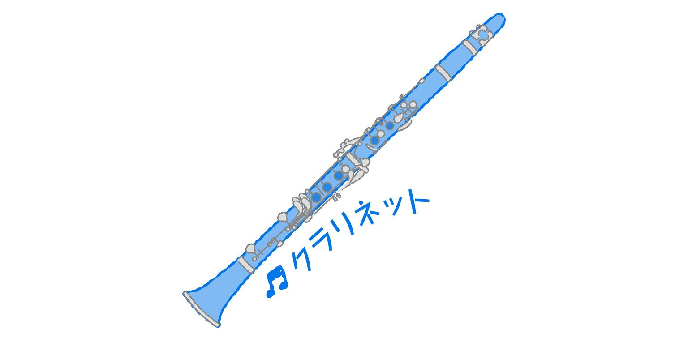

| おとなの楽習 (18) 音楽のおさらい | |
| 川口 瑞夫 | |
| (2016) | |
音楽は大好きだけど、音楽の授業は苦手だった──。
この本を手に取ってくださる皆さんの多くは、ＣＤを買ったり、カラオケやコンサートに行ったりして、音楽の楽しさをよく知っているはずです。ところが、音楽について勉強しようとすると、楽しかったはずの音楽が急に難しくなってしまいます。学校の授業でも、歌を歌ったり合奏したりしている時は楽しいのに、音楽史や譜面の話になると、頭が痛くなってしまった人が多いのではないでしょうか。
この本では、「古典派とロマン派ってどう違うの？」「８ビートって何？」といった、皆さんが日ごろ音楽について感じる素朴な疑問に答えてみようと思います。音楽の専門的な話や用語は、たしかに難しいのですが、専門家や演奏家を目指すのでなければ、それらの大半は必要ありません。音楽の仕組みを理解することと、譜面が読めることは同じではないからです。皆さんが音楽に感じている"大好きだけど難しい"というイメージを少しでも解消することが、この本の目標です。
そもそもクラシック音楽って？
学校で習う音楽といわれて、たいていの人が連想するのはクラシック音楽です。実際に教科書を見てみれば、文部省唱歌、世界の民謡、ポピュラー音楽など幅広く取り上げられているのですが、なぜか「学校の音楽＝クラシック」というイメージが定着しているようです。クラシック音楽から感じられる重厚で近寄りがたいイメージと、勉強のイメージがオーバーラップしているのかもしれません。
それはそれとして......、クラシック音楽とは、そもそもどんな音楽を指すのでしょうか。これに対する、もっとも無難な答えは「近代西洋の芸術音楽」というものでしょう。たとえば、西洋の音楽でも「蛍の光」のような作者不詳の民謡はクラシックとは呼びません。通常、クラシックと呼ばれているのは、音楽の専門教育を受けた音楽家が譜面に書いて作曲した音楽です。クラシック音楽の世界には、譜面が書けないので鼻歌でメロディーを作ってラジカセに録音している......なんて人はひとりもいません。
バロックとロマン派は６人だけ！？
クラシック音楽は、「バロック・古典派・ロマン派」と、３つの時代に分類されることが多く、これらは教科書にも必ず出てきますが、私たちには、ちょっとわかりづらい分類です。３つの時代をどこで分けるのかは、教科書や研究者によって微妙に違うのですが、この本ではもっとも単純で覚えやすい区分を採用します。
1600年から1750年までの150年間がバロック、1750年から1800年までの50年間が古典派、1800年から1900年までの100年間がロマン派と、50年単位で単純に区切ってしまいました。
これを見てもらえばわかるように、古典派の時代が極端に短いのが特徴です。音楽書の中には、狭義の古典派は1770年ごろから始まると書いてあるものもありますが、そうなると古典派の時代は30～40年間しかないということになります。
古典派については、他にも不思議なところがあります。クラシックの音楽家の中で、古典派に分類される人は、ハイドン、モーツァルト、ベートーヴェンの３人しかいません。もちろん、音楽事典などで調べれば他にも古典派の作曲家の名前を見つけることはできますが、出てくる名前はグルック、サリエリ、小バッハ（有名なバッハの息子で４人います）など、一般的にはほとんど知られていない名前ばかりです。
面白いことに、同じことはバロックにもいえるのです。バロックの音楽家で有名なのは、バッハ、ヘンデル、ヴィヴァルディの３人だけです。しかもこの３人が活躍したのは18世紀の前半、つまり150年もあるバロック時代の最後の50年間に集中しているのです。この３人以外で比較的知られているのは「パッヘルベルのカノン」を作曲したパッヘルベルくらいで、モンテヴェルディ、リュリ、コレッリ、ラモー、テレマンといった言葉を聞いても、それがバロックの音楽家だとわかる人はほとんどいないでしょう。
逆にいうなら、古典派とバロックの６人以外で、多くの日本人が知っているクラシックの有名音楽家は、ほとんどすべてがロマン派なのです。シューベルト、ショパン、リスト、ブラームス、シューマン、ロッシーニ、メンデルスゾーン、ワーグナー、ドボルザーク、スメタナ、ビゼー、チャイコフスキー、マーラー、ヨハン・シュトラウス......などなど。例外なのは、ドビュッシー、ラヴェル、サティ、ストラヴィンスキーといった20世紀以降の現代音楽に属する作曲家だけです。
ロマン派と他の時代とは、あまりにも格差があると感じないでしょうか。どうして、有名な音楽家がロマン派に集中しているのでしょうか。
すべては「古典派」から始まった！
この疑問に答える前に、もう一つ不思議なことがあります。それは、「古典派」という名称です。そもそも、クラシックを日本語に訳せば「古典」です。つまり古典派というのはクラシックとまったく同じ意味なのです。クラシック音楽の中にクラシック派があるというのは、あまりにも不自然です。
実は、本来の意味でのクラシックというのは、ハイドン、モーツァルト、ベートーヴェンらの古典派を意味する言葉でした。それが日本では西洋の芸術音楽全般を指す言葉として使われるようになったため、狭義のクラシックを古典派と呼び、広義のクラシックと使い分けるようにしたのです。別の見方をするなら、古典派というのはクラシック音楽の中でも、その中心に位置する重要な音楽だといえるわけです。
多少乱暴でも、単純明快に言い切ってしまうなら、クラシックと呼ばれている音楽とは、ハイドン、モーツァルト、ベートーヴェンの３人が創始した音楽のことだといえます。その証拠に、そう考えれば、これまでの疑問はすべて解決します。
──18世紀末に、ハイドン、モーツァルト、ベートーヴェンという３人の偉大な音楽家が登場した。19世紀になると、この３人に強く影響された若い音楽家が次々と登場し、音楽ブームが巻き起こった。この若い世代がロマン派であり、彼らはみな３人の偉人を"クラシック＝古典派"と呼んで崇めたたえた。このロマン派ブームは約100年間続いたが、それと同時に、古典派の３人よりも古い音楽、つまり古典派のルーツを探求するマニアも登場した。その結果、発見・発掘されたのがバロック時代の音楽家たちだった──と。
『四季』が発見されたのは戦後！
古典派の時代が極端に短かくて、有名音楽家が３人しかいないのも、ロマン派の音楽家がやたらと多いのも、その理由は歴史的な経緯にあるのです。その様子は、たとえば、ビートルズが登場した後に、世界中でロックバンドを組む若者が急増して、音楽を取り巻く状況ががらりと変わったこととよく似ているかもしれません。ロックバンドを組んだ若者の中には、ロックのルーツである黒人音楽を探求していった人たちもいました。それと同じことがクラシック音楽の世界でも起こっていたのです。
実際、古典派以前の音楽をバロックと呼ぶようになったのは20世紀に入ってからのことです。ヴィヴァルディの『四季』といえば、多くの人に知られているバロックの代表曲ですが、この曲の楽譜が発見・出版されたのは第２次大戦後の1949年です。つまり、この曲は長い間、歴史の闇の中に埋もれていたのです。戦前のクラシックファンはもちろんのこと、19世紀に活躍した有名音楽家たちも『四季』を知らないのです。そして、ヴィヴァルディはもちろんですが、バロック音楽全体についても、その全体像はいまだ解明されていません。
これがクラシック音楽の全体像です。ですから、クラシック音楽について知ろうと思ったら、まず古典派の３人の功績について知ることが先決だということがわかりました。
市民のための音楽
前の章で説明したように、古典派といえば、ハイドン、モーツァルト、ベートーヴェンですが、３人ともウィーンで活躍したので、「ウィーン古典派」とも呼ばれます。最初に、彼らが活躍した18世紀末がどんな時代だったのかを確認しておきましょう。
18世紀末とは、市民革命と産業革命の時代でした。アメリカが独立宣言をしたのは1776年、フランス革命が起きたのは1789年です。絶対君主の時代が終わり、市民階級が台頭してきたのが、ちょうどこの時代なのです。また、イギリスで産業革命が始まったのもこの時代です。1760～70年代に蒸気機関や紡績機・力織機が開発されて、綿などの工業製品が、大規模な工場で大量生産されるようになりました。
音楽もそうした時代の変化と無縁ではありませんでした。古典派以前の時代では、専門教育を受けた音楽家は、王侯貴族や教会に雇われていました。たとえば、宮廷音楽家は、王侯貴族が主催する晩餐会や舞踏会といったイベントのためのBGMを作曲・演奏していたのです。当然のことですが、そうしたイベントに集まる来賓は必ずしも音楽を聴きに来るわけではありません。教会音楽家の場合も事情は同じで、教会行事の小道具として音楽が使われていたにすぎません。
古典派の時代になるとこうした状況に変化が起きます。音楽家が、王侯貴族のイベントとは別にコンサートを開くようになるのです。コンサートに集まる観客は市民階級の人たちですが、彼らは"音楽を聴く"ために会場に足を運びました。現代の私たちから見れば、当たり前のことかもしれませんが芝居やイベントのBGMではなくて、音楽だけを聴くという聴衆が誕生したことは画期的なことでした。
また、この時代の音楽家は楽譜を出版するようになります。もちろん、楽譜を買ったのは市民階級の音楽ファンでした。当時の音楽ファンは、音楽を聴くだけではなく、楽譜を見ながら演奏を楽しむのが普通でした。ラジオもレコードもない時代ですから、コンサート以外の場所で、好きな音楽に触れようと思ったら、自分で演奏するしかなかったのです。
ここまでの話からもわかるように、古典派の時代というのは、市民のための音楽が生まれた時代だったのです。とはいえ、コンサートや楽譜出版というのは、不特定多数の観客＝大衆を相手に商売をするということです。売れなければ、人気がなければ、生活できなくなります。それは、現代の音楽家と同じです。つまり、「商業主義／芸術至上主義」というような音楽家の葛藤も、この時代に始まり、現代まで続いているのです。一方、古典派以前の音楽家は雇い主（パトロン）さえ満足させていれば、聞き手の反応などは、あまり重要ではなかったはずです。
また、この時代には、楽器や楽団の編成が大きく発展しました。ピアノが考案されたのは古典派の時代ですし、ヴァイオリンなども大きく改良されました。実際、バロック音楽にピアノを使った曲はありませんし、ヴァイオリンにしても、現代のヴァイオリンとはかなり違うので、演奏家の中には、当時の古楽器を再現して演奏する人もいます。
バロックにないものといえば、オーケストラもそうです。オーケストラがないのですから、交響曲（クラシックの主要ジャンル）というジャンルもありません。これらもみな、古典派の時代に生まれたものなのです。少人数で演奏される音楽が手工業的だとするなら、大人数で演奏される交響曲は、巨大な建築物のようなイメージがあります。要するに古典派の時代とは、交響曲のような複雑で大掛かりな音楽が作られるようになった時代でもあるのです。
交響曲の父・ハイドン
古典派を代表する３人の中でも、もっとも地味な印象なのがハイドン（1732～1809）です。若くして世を去ったモーツァルトやベートーヴェンの人生が波乱万丈だったのに比べると、長生きしたハイドンの人生にはドラマチックなエピソードがあまりありません。学校の音楽室の壁などに飾られている肖像画を見てもオジサン臭い印象が強くて、若々しいモーツァルトやベートーヴェンとは対照的です。歴史に名を残すような大人物の場合、長生きするとデメリットもあります。
とはいっても、ハイドンが残した作品がオジサン臭いわけではありません。『交響曲第94番』は、曲を聴けば誰でも聞き覚えのある有名曲ですが、途中で聴いている人がびっくりするような大きな音が出てくることから『驚愕』と呼ばれています。無邪気でユーモラスな作風がハイドンの持ち味です。
音楽史におけるハイドンの業績は大きくて、"交響曲の父"とか"弦楽四重奏曲の父"などと呼ばれています。交響曲や弦楽四重奏曲（クラシックの主要ジャンル）は古典派の時代に誕生したジャンルですが、それらの基本的なスタイルや方法論を確立したのがハイドンなのです。たとえば、彼は100曲以上の交響曲を残していますが、１番から順番に聴いていくと、交響曲の成立過程がわかるといわれています。もともとは、オーケストラだけで演奏されていたオペラの序曲を、ハイドンは４楽章で構成される器楽曲（インストルメンタル）として形にしたのです。
ハイドンは、音楽人生の大半をハンガリーのエステルハージ侯爵家の楽団で過ごしましたが、彼の人気はエステルハージ家の外にも広まったため、楽譜を出版して、その人気に応えました。エステルハージ家を離職してからは、ロンドンの興行家に呼ばれて渡英し、公開演奏会（コンサート）で大きな成功を収めました。ハイドンが生きた時代は、貴族のためだった音楽が市民のための音楽に移行する時代でした。

神童・モーツァルト
モーツァルト（1756～1791）には、神童～天才というイメージがあります。実際、幼少時代のモーツァルトは音楽家の父親に連れられてヨーロッパの各地を回り、天才少年として注目を集めました。７歳の時には文豪ゲーテの前で演奏し、９歳の時には最初の交響曲を書いたといわれています。
とはいっても、当時の彼は天才的な"少年"として評価されていたのであって、大人になってからは就職先を見つけるのに苦労しました。最終的には、ウィーンでフリーの音楽家として活動するようになり、オペラや交響曲で大きな成功を収めます。フリーの音楽家の第一世代といえます。ただ、その人気も長続きしなくて、晩年は苦しい生活を送り、35歳の若さで亡くなります。短いですが、起伏の激しいドラマチックな人生だったといえるでしょう。
死因についても諸説があり、彼の才能に嫉妬したサリエリに毒殺されたという噂があることは有名です。サリエリは、ベートーヴェン、シューベルト、リストらを指導した名教師ですが、モーツァルトの息子クサファーの指導もしています。そのクサファーに関しては、本当の父親はモーツァルトではなくてジュズマイヤーではないかという疑惑があります。ジュズマイヤーはモーツァルトの未完の遺作『レクイエム』を補筆完成させた作曲家として知られています。その『レクイエム』は匿名の人物から依頼された作品ですが、その依頼者は死の世界からの使者だとか、モーツァルトが自身の死を予感して作ったとか......。モーツァルトの人生には、こうしたワイドショー的な噂話がてんこ盛りです。
映画『アマデウス』のモーツァルトは、従来の"神の子"というイメージとはまったく違って、下ネタ好きの下世話で軽率な男として描かれていましたが、そのような解釈に違和感を感じないくらい、彼の人生はウサン臭いエピソードに満ちているのです。
モーツァルトに関しては、音楽の形式～スタイルを発展させたというような音楽史的な意味での功績はあまりありません。それよりも、非凡な才能を持った稀代のメロディーメイカーとして評価されることが多いようです。下品な人物だったかどうかは別にしても、溢れ出る才能を持った規格外の天才というイメージは多くのファンに共有されています。
苦悩するアーティスト・ベートーヴェン
古典派のヒーロー、クラシック音楽のヒーローといえるのがベートーヴェン（1770～1827）です。彼のどこがそんなにすごいのでしょうか。同じ天才でも、モーツァルトの場合、メロディーが溢れ出てくるという印象なのに対して、ベートーヴェンは、苦悩の中から作品を搾り出すというイメージがあります。ベートーヴェンは苦悩する天才なのです。彼は「人は苦悩を通じて歓喜を勝ち得る」という言葉を残しています。
実際、ベートーヴェンの音楽は、彼の人生上の事件（苦悩）と関連づけて解釈されることが多いです。もっとも有名なのは、20代の後半に発症した難聴です。彼は一時、自殺することも考えたようで、1802年に、有名な「ハイリゲンシュタットの遺書」が書かれています。しかし、それを境にして『交響曲第３番・エロイカ（英雄）』（1804）『第５番・運命』（1808）『第６番・田園』（1808）といった傑作群が生まれるのです。
また、ベートーヴェンは終生独身でしたが、結婚願望は強かったようで、数多くのラブレターが残されています。これらの恋はどれも成就することはありませんでしたが、「エリーゼのために」（1808）など、彼の恋愛体験から生まれた曲もたくさんあります。
晩年は、難聴に加えて健康状態もよくなかったため、人付き合いが少なくなり、孤独感にさいなまれることも多かったようです。甥っ子のカールを偏愛し、彼を自分の後継者に育てようとして激しい確執を起こしますが、結局うまくいきませんでした。有名な『交響曲第９番・合唱』の末尾で人間の絆や歓喜が高々と歌い上げられるのは、彼の個人的な孤独感と無関係ではないはずです。
また、ベートーヴェンは音楽だけでなく、宗教・政治・社会思想にも強い関心を持っていた人物なので、彼の音楽には強い精神性・メッセージ性が感じられます。同じ古典派でも、ハイドンやモーツァルトの音楽にメッセージ性はありません。
『エロイカ（英雄）』は、もともとは、フランス革命を理想にして新しい国家を築いたナポレオンを讃えるために作曲されました。しかし、ナポレオンが皇帝に即位したというニュースを聞いたベートーヴェンは、「ナポレオンもただの俗物にすぎなかった」と幻滅し、タイトルを『ボナパルト』から『エロイカ』に書き換えたといわれています。
ちなみに、『エロイカ』は作曲者によってタイトルをつけられた最初の交響曲としても知られています。もちろん、ハイドンやモーツァルトにも『驚愕』『ジュピター』など、タイトルのついた交響曲はあります。しかし、それらは後世の聞き手が勝手につけたニックネームです。さらにいうと、ベートーヴェンの『運命』もニックネームであり、運命をテーマにして作曲されたわけではありません。それに対して、『エロイカ』はベートーヴェン本人がつけたタイトルであり、作品のテーマでもあります。このように、歌詞のない器楽曲（インストルメンタル）にテーマ性を持たせたという点で『エロイカ』は画期的な作品でした。
『エロイカ』が画期的なのはそれだけではありません。ハイドンやモーツァルトの交響曲が10～20分程度の長さなのに対して、『エロイカ』は約50分と、従来の２倍もある超大作でした。こうした大作志向もベートーヴェンの特徴で、交響曲がクラシック音楽を代表するジャンルとなるきっかけも、ここから始まったといえます。
また、ベートーヴェンは音楽史の知識を持たない素人にもわかりやすいと指摘されることがよくあります。覚えやすいメロディーやシンプルな和音が多く、作品にテーマがあるところが、一般人にもわかりやすいというわけです。しかし、重要なのはベートーヴェン自身が新しい時代の音楽のあり方について深く考えていたという点です。貴族のための音楽ではなくて、市民のための音楽を──というのが、ベートーヴェンの追い求めていたテーマなのです。
日本では、毎年年末になると『第九』が演奏されますが、その中には一般の市民合唱団が参加しているケースも多くあります。『第九』の合唱部分はとても覚えやすいメロディーですが、その根底にあるのは、市民に開かれた音楽を目指していたベートーヴェンの思想性～メッセージ性なのです。
ロマン派の「ロマン」とは？
最初に説明したように、クラシックの有名音楽家の大半はロマン派です。これらの音楽家を順番に紹介しようとするとものすごい量になってしまうので、この章では代表的な人物をピンポイント的に紹介することにします。
その前に、ロマン派という呼び名について説明しておきたいと思います。教科書や事典などでロマン派を引くとたいていの場合は次のような説明がされています。形式を重視した古典派に対して、ロマン派は個性・テーマ性・感情表現などを重視している、と。これはこれで間違いではないのですが、別の見方をするなら、ロマン派は形式的には古典派とあまり変わらない（進歩していない）ということでもあるのです。ロマン派の音楽家の多くは、ベートーヴェンなど古典派の音楽家を強く信奉していた人たちですから、乱暴な言い方をするなら、ロマン派とは古典派のフォロワーだといえなくもないのです。
もう一つ注意しなければいけないのは、ロマンという言葉にあまり惑わされてはいけないということです。一口にロマン派といっても、その個性はバラバラで百花繚乱です。ロマン派の音楽はロマンティックな曲ばかりというわけでもありません。そもそも、ロマン派というのは音楽史の専門用語ではないのです。もともとは、18～19世紀の文学・思想・美術の動向を意味する「ロマン主義」という概念を音楽史に流用したものなのです。ですから、ロマン派の音楽についても、ロマン主義の時代に流行った音楽というくらいの意味だと考えておいてください。
歌曲王・シューベルト
ロマン派を紹介するにあたっての１番バッターはシューベルト（1797～1828）です。彼はベートーヴェンの死の１年後に31歳で亡くなっているので、ほぼ同時代の人です。２人ともウィーンで活動していたので面識もありました。ですから、音楽史家の中には、後期ベートーヴェンをロマン派に分類したり、逆にシューベルトを古典派に分類する人もいます。
シューベルトといえば"歌曲王"として有名です。「歌曲」とはピアノの伴奏などで歌われる声楽曲のことで、誰が作者なのかわからない民謡とは区別されています。多くの場合、ゲーテやシラーといった文豪の詩に作曲家がメロディーをつけました。ちなみに、ドイツではリート、フランスではシャンソン、イタリアではカンツォーネなどと呼ばれます。
シューベルトは短い生涯の中で600曲以上の歌曲を残しましたが、よく知られているのは連作歌曲集『冬の旅』で、収録曲の一つ「菩提樹」は特に有名です。歌曲集というのは、今の感覚でいうとコンセプト・アルバムに近いかもしれません。そのほかにも、教科書でおなじみの「野ばら」（歌詞はゲーテ）、「子守唄」、中学校の鑑賞教材として定番の「魔王」などがあります。
ベートーヴェンを師と仰いでいたシューベルトは、交響曲もいくつか残しました。死後10年以上過ぎてから楽譜が発見され、ベートーヴェンの後継者として評価されるようになりました。有名なのは『未完成』と『グレイト』で、『未完成』は第２楽章までしか書かれていなかったので、そのように呼ばれています。
また、貧しい生活の中で音楽活動を続けた清貧の音楽家として知られていましたが、近年の研究では、売春宿通いがたたって梅毒に罹っていたことが明らかになっています。この時代の音楽家のエピソードは、後世の信奉者（？）によって脚色・美化されていることが多いようです。
シューマンとメンデルスゾーン
シューベルトの『グレイト』の楽譜を発見したのがシューマン（1810～1856）です。彼は「トロイメライ」の作者として有名ですが、音楽評論家としても活躍しました。自身が編集長を務める音楽評論誌でショパンやブラームスの才能をいち早く絶賛したのも彼です。この時代は、市民の音楽ファンが急増したので、音楽雑誌や音楽新聞が続々創刊され、音楽評論家と呼ばれる人たちが、新しい才能や過去の名曲を発見していきました。なお、シューマンは晩年、自殺未遂事件を起こすなどして、精神病院で息をひきとりました。
シューマンが発見した『グレイト』交響曲を指揮・演奏したのがメンデルスゾーン（1809～1847）です。彼の場合も、作曲家とは別に２つの業績があります。一つめは、バッハの『マタイ受難曲』の演奏会を開き、歴史に埋もれていたバッハという偉大な音楽家の存在を世に知らしめたことです。これを機に、バッハは古典派のルーツにあたる偉人として、"音楽の父"と呼ばれるようになりました。
バッハに限らず、ベートーヴェン以前の音楽というのは、現在の流行歌と同じように、時代とともに忘れ去られていくのが普通でした。そもそも"過去の名曲"を演奏しようなどと考える人がいませんでした。最近はポピュラー音楽でも、過去の名盤が簡単に入手できるようになりましたが、一昔前のテレビ番組（特にバラエティなど）やＣＭの音楽などで、音源が残っていないものはたくさんあります。これと同じように、古典派以前の音楽というのは、着なくなった洋服や使用済みの切手のように、使い捨てにされるのが普通だったのです。メンデルスゾーンやシューマンは、使い捨てにされていた過去の作品を"永遠の名曲"として再認識するという、新しい音楽の聴き方を提案したのです。
メンデルスゾーンのもう一つの業績は、オーケストラにおける指揮者の役割・地位を芸術活動のレベルに引き上げたことです。この時代の指揮者というのは、オーケストラの整理係のようなものでした。小中学校のクラス合唱などで指揮者をジャンケンで決めるのと同じ感覚です。そもそも、過去の名曲を演奏するという習慣がなかったので、この時代の指揮者というのは作曲者が兼ねることが多かったのです。
メンデルスゾーンは、過去の名曲を演奏するにあたって、その曲に独自の解釈を施し、各演奏者にその解釈どおりの演奏をするように指示しました。こうして、指揮者が楽団員を指導し、演奏全体の責任者と見なされるようになりました。現在の私たちは、オーケストラを聴く際に指揮者が誰なのかを重視しますが、こうした聴き方の始まりがメンデルスゾーンなのです。
アイドルだったショパンとリスト
ここまで紹介してきた音楽家は、バッハ、ハイドンからメンデルスゾーンまで、すべてドイツ圏（オーストリアを含む）で活躍した人たちです。それに対して、ショパンとリストはパリの社交界で人気を博した音楽家です。
ショパン（1810～1849）の出身はポーランドですが、音楽人生の大半を亡命先のフランスで過ごしました。パリの上流階級の子どもにピアノを教えたり、サロンで演奏会を開いたりして、社交界の人気者になります。女性にも人気があり、その恋愛遍歴の中でも作家ジョルジュ・サンドとの交際が有名です。ショパンが作曲した曲の大半はピアノの独奏曲で、ピアノの表現様式を拡大し、ピアノ音楽の新しい地平を切り開いたといわれています。「別れの曲」「ノクターン第２番」など、今でも女性ファンの人気が高く、"ピアノの詩人"と呼ばれています。
そのショパンより一足早く、パリの社交界で人気者になっていたのがリスト（1811～1886）です。彼もアイドル的な人気の高かった人であり、コンサートでは女性ファンの失神が続出したと伝えられています。クラシック音楽というと、厳粛で堅苦しい芸術音楽というイメージがありますが、そうしたイメージは主としてドイツで作られたものです。フランスのサロンで演奏される音楽は、現代のロック・コンサートと変わらない様子だったようです。
また、リストはピアノ演奏の上手さでも知られていて、"ピアノの魔術師"と評されます。コンサートでは、その超絶的な演奏テクニックで観客が熱狂したといわれています。ちなみに、ショパンはリストの演奏技術を高く評価しながらも、作曲家としては自分の方が上だと考えていたようです。
そのショパンが39歳で亡くなったのに対し、リストは74歳まで生きました。当時の音楽家には、貧しかったり、早死にしたりする人が多いのですが、リストは非常に恵まれた音楽人生を送りました。活動地域もパリだけでなくヨーロッパ全土に及び、演奏者、作曲家だけなく、編曲家、教育者、評論家としても活躍しました。ピアノ曲「ラ・カンパネルラ」は特に有名ですが、他にもあらゆるジャンルを手がけています。交響詩（クラシックの主要ジャンル）という新しいジャンルを生み出して、物語、宗教、美術、歴史などを音楽で表現することにも成功しました。
ブラームスとワーグナーの音楽論争
......と、ここまでが前期ロマン派の音楽家たちです。1886年まで生きたリストを別にすれば、他の音楽家は19世紀前半に活躍しました。それに対して、19世紀後半に活躍した音楽家は後期ロマン派と呼ばれます。その中で特に有名なのはブラームスとワーグナー（ヴァーグナー）です。この２人は、音楽観をめぐって対立していたことで知られています。
ブラームス（1833～1897）は、古典派の形式主義的な作風を重んじた音楽家で、新古典派などと呼ばれることもあります。彼の『交響曲第１番』は、ベートーヴェンの第10交響曲だと評されましたが、そうした古典派への回帰を保守的だと感じる人もいたようです。
理論家・作家としても活動したワーグナー（1813～1883）は、それまでの娯楽志向の強かったオペラを、音楽・演劇・思想が合体した総合芸術へ進化させようとしました。彼は、音楽というのは本来、言葉や踊りと一体化しているものであって、音楽だけを切り離して聴くような聴き方に批判的でした。実際、彼は音楽だけでなく、台本・歌詞・舞台美術にも携わりましたが、このようにして作られた彼の作品はオペラではなく「楽劇」と呼ばれます。
ベートーヴェンの交響曲『エロイカ』のところでも説明しましたが、古典派の音楽の大部分、特に器楽曲（インストルメンタル）にはタイトルがありません。これらの音楽は、物語やテーマを音楽で表現したのではなく、音楽の面白さを純粋に追求した音楽なので、「絶対音楽」と呼ばれます。
これに対して、総合芸術を目指すワーグナーの音楽は、物語やテーマ性とは切っても切れない関係です。このように、物語や思想、情景を音楽で表現したものを「標題音楽」といいます。表題ではなくて標題だというところに注意してください。単にタイトルがついているかどうかが重要なのではなくて、音楽以外の具体的なテーマがあるかどうかが重要なのです。交響詩を生み出したリストなども、標題音楽を追求した作曲家です。
このように見てくれば、古典派のような形式を重視したブラームスと、言葉やテーマ性を重視したワーグナーが対立した理由もよくわかります。２人の対立は、当時の評論家を巻き込んで大きな論争となりました。
ところで、ワーグナーにはもうひとつ大きな業績があります。オーケストラの編成を拡大・大規模化して、より迫力のある音楽表現を実現したことです。彼の作品には、演奏時間が長いものが多いですが、良く言えば重厚長大な昂揚感、悪く言えば仰々しい──というロマン派の音楽のひとつの頂点を極めたといえます。さらにこの時代は、ピアノやヴァイオリンなどの楽器も、大音量が出せるように改良されたので、こうした傾向に拍車がかかりました。ワーグナーの拡大路線に影響を受けた音楽家としては、ブルックナー、マーラー、リヒャルト・シュトラウスがいます。
周辺国から登場した国民楽派
この時代のもう一つの潮流として忘れてはいけないのが、国民楽派（民族楽派）です。ここまで紹介してきた音楽家は、ショパンとリスト以外は皆ドイツ圏（ウィーンを含む）で活躍した人ばかりです。クラシック音楽というのは、ドイツを本場とする芸術音楽だと考えて、さしあたって問題ないと思います。もう少し正確にいうと、芸術志向の強いクラシックの本場がドイツで、オペラやサロン音楽など娯楽志向の強いクラシックの本場がフランスとイタリアです。
19世紀後半は市民階級が台頭した時代ですが、それに伴って民族意識・国民意識が高まった時代でもありました。ドイツでも、ワーグナーがドイツ民族に伝わる伝説などをテーマにしたオペラ（楽劇）を書きました。こうした流れの中で、ヨーロッパの周辺諸国からもドイツのクラシックの影響を受けた音楽家が登場するようになります。彼らの多くは、自国の国民性や民族性を音楽に反映させようとしたので、国民楽派または民族楽派と呼ばれます。
国民楽派で有名なのは、ロシアのチャイコフスキー（1840～1893）、チェコのスメタナ（1824～1884）、ドボルザーク（1841～1904）の３人です。チャイコフスキーには、バレエ音楽『白鳥の湖』『眠れる森の美女』『くるみ割り人形』のほか、交響曲第６番『悲愴』など、有名曲が目白押しです。
一方、チェコのスメタナは、学校の音楽鑑賞の定番でもある「ヴルタヴァ（モルダウ）」で知られています。この曲は全６曲からなる連作交響詩『わが祖国』の２曲目で、日本では、チェコ語のヴルタヴァよりもドイツ語のモルダウの方が一般的です。ドボルザークといえば、交響曲第９番『新世界より』が有名です。新世界とはアメリカのことで、アメリカ滞在中に作曲されました。インパクトの強い第１楽章はもちろんですが、唱歌「家路」としても知られる第２楽章も有名で、デパートの閉店時などによく流されます。
国民楽派としては、他に、ロシアのムソルグスキー、ノルウェーのグリーグ、フィンランドのシベリウス、イギリスのエルガー、アメリカのフォスターがよく知られています。
フランス印象派はオシャレ！
ロマン派の時代は19世紀とともに終わります。その次の時代を担ったのは、フランスの印象派と呼ばれる人たちです。その中心的な存在だったのがドビュッシー（1862～1918）やラヴェル（1875～1937）で、1890年代から活動を開始します。ロマン派のマーラー、リヒャルト・シュトラウスとほぼ同じ世代です。
印象派の人たちは、形式を重視した古典派や、大音量での感情表現を好むロマン派に対して批判的でした。彼らの作品には、音色や雰囲気を重視したものが多く、実験的でありながらもオシャレで洗練されているところが特徴です。また、東洋などの異国の音楽、中世の教会音楽、場末のキャバレー音楽など、クラシック音楽の本流から外れた要素を積極的に取り入れるのも、印象派の特徴です。
たとえば、有名なラヴェルの『ボレロ』は、スペイン音楽に影響された作品ですが、同じリズムとメロディが十数分間にわたって、ひたすら繰り返されるという、とてもユニークで実験的な構成になっています。
印象派の音楽は、単に雰囲気を追求するだけでなく、拍子感（３拍子・４拍子など）や調性（長調・短調など）といったクラシック音楽の決まりごとから逸脱する方向に進みます。ドビュッシーの管弦楽曲『牧神の午後への前奏曲』（1894）は、メロディーの着地点がどこにあるのかハッキリしない、浮遊感（不安？）に満ちた作品ですが、印象派の記念碑的な作品だといわれています。そして、ドビュッシーは現代音楽の先駆者だと考えられるようになりました。他では、「ジムノペディー」で知られるサティーも、印象派の流れに属する音楽家です。
20世紀の現代音楽は難解！
20世紀になると、さらに実験的な作品が作られるようになります。オーストリアのシェーンベルク（1874～1951）は、１オクターブの中にある12個の音をすべて対等に使うという「12音技法」を考案しました。この技法によって作られた曲は、中心音がどこにも存在しない、長調でも短調でもない音楽なので、無調音楽（音楽における調性とは？）と呼ばれます。
ロシアのストラヴィンスキーやハンガリーのバルトークは、ロシアやルーマニアの民族音楽を取り入れて、複雑なリズムや拍子の曲を作りました。ストラヴィンスキーのバレエ曲『春の祭典』は変拍子と不協和音のオンパレードだったため、初演の際、客席から野次が飛び交い、最後は殴り合いのケンカになってしまったと伝えられています。
20世紀の現代音楽は、その後もショスタコヴィッチ、ジョン・ケージ、シュトックハウゼン、スティーヴ・ライヒと続いていきますが、あまりにも難解なため、多くのリスナーの支持は得られませんでした。ロマン派の後に、クラシックファンの心をつかんだのは、当時登場したばかりだった映画音楽でした。ただし、20世紀になって注目を浴びたジャンルがもう一つあります......。
バロック音楽の"発見"
古典派より前の音楽をバロック音楽と呼ぶようになったのは20世紀になってからのことです。また、多くのクラシックファンの間でバロック音楽がブームになったのは、20世紀後半になってから、つまり第２次世界大戦後のことです。すでに書いたとおり、バロック音楽の有名曲、ヴィヴァルディの『四季』も戦後に楽譜が発見・出版された曲です。重厚長大で感情表現豊かなロマン派の音楽に聴きなれていた（聴き飽きた？）リスナーの耳には、バロック音楽はシブい音楽に聞こえたのかもしれません。
バロックという言葉は、ロマン派の場合と同じで、もともとは17世紀前後の美術・建築の様式を指す言葉でした。「いびつな真珠」を意味するポルトガル語" barocco "が語源で、ルネサンス時代の調和・均衡とは逆の、奇抜で騒々しいというイメージで使われました。とはいえ、ワーグナーらの誇大妄想的な音楽を知っている現代人から見れば、バロック音楽は、それほど"いびつ"ではないはずです。
王侯貴族のためのBGM
バロック音楽の時代は、イタリアでオペラが誕生した1600年ごろから始まります。バロック音楽はオペラとともに誕生・発展しました。イタリアといえばオペラの本場ですが、バロック音楽の中心地もイタリアで、やがてフランスへ、最後にはドイツへと波及していきます。ドイツが音楽の中心地となるのは古典派の時代からです。
この時代はまた、フランスのルイ14世など、絶対王政の時代でもありました。王侯貴族たちは宮殿や庭園で、食事、舞踏、オペラ、馬上競技、花火、噴水、葬儀といったイベントを開催しましたが、それを演出する上で欠かせない小道具の一つが音楽でした。当時の音楽家はそうした王侯貴族に雇われていました。
古典派の音楽は市民のための音楽であり、音楽好きの聴衆のためにコンサートが開かれましたが、バロック時代の音楽は王侯貴族のためのものであり、音楽はオペラなどのイベントに附帯する小道具（BGM）にすぎませんでした。ですから、この時代には音楽を後世に残そうなどと考える人はいなくて、使い捨てにされていました。ヴィヴァルディの存在も20世紀に再発見されるまで、ずっと忘れられていたのです。
この時代は、ヴァイオリンなどの楽器の開発が進みましたが、まだピアノは開発されていなかったので、ヴァイオリン類、フルートなどの木管楽器、ハープシコード（チェンバロ）、オルガンなどの鍵盤楽器などを使った器楽曲（インストルメンタル）が発展しました。ただし、当時の楽器は、同じヴァイオリンでも現在のものとはかなり違うので、近年では当時の古楽器を再現して演奏されることもあります。
当時の代表的なジャンルに合奏協奏曲があります。古典派以降の協奏曲は、ソロ演奏者とオーケストラが競演するスタイル（独奏協奏曲）が一般的ですが、合奏協奏曲では、少人数のグループと大人数のグループに分かれて競演されます。２つのパートに分かれて、競い合うように演奏するというスタイルはバロック音楽の特徴の一つです。
現代の音楽の基本的なルールもこの時代に完成しました。たとえば、３拍子とか４拍子といった拍子感もバロック時代に登場したものです。バロック以前には何拍子なのかはっきりしない音楽がたくさんあったのです。この他にも、長調・短調の区別とか、和音（コード）の理論などが確立しました。
通奏低音を現代の感覚で説明すると...
さて、こうしたバロック音楽の特徴の中でも、もっとも有名かつ重要なのは通奏低音です。バロック時代は"通奏低音の時代"と呼ばれたりします。通奏低音とは、現代の感覚でいうならベース音（ベースライン）のことです。この時代の音楽は、（１）ベース音、（２）ベース音を元にして即興的に付けられる和音、（３）主旋律（メインのメロディー）──の３要素で構成されていました。これは、現代の流行歌の構造とよく似ています。
たとえば、ピアノの伴奏で歌を歌う場面を想像してみてください。ピアニストは左手でベース音、右手で和音を弾いて、ボーカリストがメロディーを歌います。ボーカルの代わりにヴァイオリンがメロディーを弾けば、ヴァイオリン・ソナタになります。ロック・バンドだったら、ベースがベース音を弾いて、リズムギターがコードを弾いて、その上にボーカルかギターソロでメロディーを乗せれば、同じ構造になります。
ただし、バロックの場合、ベース音は"伴奏"ではありません。現代の流行歌では主旋律（メロディー）の存在感が突出していて、ベース音や和音が脇役のように感じられることが多いのですが、バロックではベース音（通奏低音）が主導権を持っています。主旋律と伴奏（？）が競い合うように演奏されるのがバロック音楽の特徴なのです。
バロックの有名音楽家は３人！
実は、バロック時代の音楽家で有名な人はほとんどいません。コッレリとかラモーといった名前を知っているのは、一部のバロック音楽マニアだけでしょう。ヴィヴァルディ（1678～1741）、ヘンデル（1685～1759）、バッハ（1685～1750）は有名ですが、３人とも、約150年あるバロック時代の最後の50年間に活動した人です。しかも、バロックの本場であるイタリア出身なのはヴィヴァルディだけです。『水上の音楽』の作者として知られるヘンデルは主にイギリスで活動した人ですが出身はドイツ。もちろん、バッハもドイツです。このあたりに、なにか非常に偏ったものを感じます。
バッハはもともと、ロマン派の時代に古典派のルーツに位置する巨匠として再発見されていて、"音楽の父"と呼ばれていた人です。それが、20世紀のバロック・ブームの中で、バロック音楽を代表する音楽家として認識されるようになりました。また、バッハはヴィヴァルディの研究をしていたことがありましたが、それがきっかけでヴィヴァルディの存在が知られるようになりました。
同時代人に評価されなかった天才・バッハ
要するに、有名な３人というのはドイツの古典派に縁が深かった人たちなのであって、バロック音楽の全体像というのは、一般的にはあまり知られていないというのが実情です。今後の研究で新たに発見されることもたくさんあるかもしれません。
さらにややこしいのは、３人の中でも一番有名なバッハが、バロック音楽の中でも異端的な存在だということです。バッハというと、学校の音楽鑑賞曲としておなじみの「フーガ・ト短調（小フーガ）」や「トッカータとフーガ」といった教会音楽の印象が強いせいか、非常に堅苦しい音楽というイメージがあります。しかし、バロック音楽の主流は、イタリアやフランスで盛んだったオペラや王侯貴族のイベント音楽ですから、どちらかといえば、華やかで軽やかな印象の作品が多いのです。もし、バロック音楽に対して、堅苦しいとか重々しいというイメージを持っている人がいたなら、それはバッハのイメージと混同している可能性が高いです。
ただしバッハは教会音楽だけでなく、オペラを除くあらゆるジャンルの作品を残していて、その作品数が膨大なことでも知られています。『ブランデンブルク協奏曲』『マタイ受難曲』『平均律クラヴィーア集』「G線上のアリア」など、有名曲がたくさんありますが、生前のバッハはあまり高い評価を受けていません。イタリアで売れっ子になったわけでもないし、有力な貴族に仕えたわけでもないし、オペラで人気を博したわけでもありません。ドイツ地方で地味に活動するオルガン奏者として知られていた程度です。
ちなみに、後年のドイツ・ロマン派の人たちは、メンデルスゾーンの手によって再発見されたバッハのことを、ことさら高く評価しました。彼らは、フランスやイタリアの音楽を、聴衆に媚びた軽薄な音楽だとバカにする傾向が強かったので、「芸術性が高すぎたがゆえに同時代人に評価されなかった天才」というイメージに弱かったのです。そうはいっても、現代においてもバッハの人気が高いのは動かない事実です。音楽史の中でも特に重要な音楽家として数多くの研究書が書かれています。
インストでないクラシック
多くの人が、クラシック音楽という言葉から連想するのは交響曲のような器楽曲です。そして、器楽曲の歴史をリードしてきたのはドイツですから、クラシック音楽＝ドイツの音楽＝堅苦しい、というイメージを持つ人が多いのが実情です。
しかし、器楽曲だけがクラシックではありません。さらにいうなら、音楽というのは"聴くため"だけにあるわけでもありません。この節では、音楽が演劇の一要素になっているオペラや、踊りのための音楽であるバレエとワルツを紹介します。
オペラ
イタリアのフィレンツェでオペラが生まれたのは1600年ごろですが、これはバロック音楽の始まりと一緒です。当時のオペラ歌手は通奏低音をバックに歌っていたといいますから、オペラとバロックは兄弟のような関係だと考えていいでしょう。17世紀の中ごろにはイタリアを中心にヨーロッパ各地でオペラが上演されるようになり、貴族や裕福な市民の娯楽になりました。と同時に、カストラートと呼ばれる去勢された男性ソプラノ歌手が人気を集めるようになりました。この時代の作品には、ギリシャ神話やローマ時代の偉人を扱ったシリアスな物語が多かったようですが、現在ではあまり上演されません。
18世紀になると、イタリアでは"オペラ・ブッファ"という庶民を主人公にしたコミカルなスタイルのオペラが流行るようになり、従来のシリアスなものは"オペラ・セーリア"と呼んで区別されるようになりました。そのオペラ・ブッファ（台本はイタリア語）で名作を残したのがモーツァルトで、『フィガロの結婚』『ドン・ジョバンニ』は彼の代表作として知られています。また、ドイツ語で書かれた『魔笛』も有名です。当時のフリーの音楽家にとって、一番お金になるのはオペラを当てることでした。
19世紀になると、まず、『ウィリアム・テル』で知られるロッシーニ（イタリア）が人気を集めますが、この時代（ロマン派）を代表するオペラ作曲家といえば、ドイツのワーグナーとイタリアのヴェルディの２人で決まりでしょう。
ドイツのワーグナーは、『ニーベルングの指環』『トリスタンとイゾルデ』『ニュルンベルクのマイスタージンガー』など多くのオペラを残しました。ロマン派のところでも説明しましたが、彼はオペラを単なる娯楽ではなくて、音楽・演劇・思想が合体した総合芸術＝楽劇と考えていたので、音楽だけでなく台本の執筆や舞台制作にも手を出しました。
芸術性を重視したドイツに対して、フランスでは、奇抜な舞台装置やバレエなど、豪華絢爛なパフォーマンスを売りとする"グランド・オペラ"が一世を風靡しました。一方、イタリアでは、芝居や視覚的要素よりも歌手の歌声を重視する風潮が強かったのですが、ヴェルディ（1813～1901）が登場し、『リゴレット』『椿姫』『アイーダ』『オテロ』『ファルスタッフ』など、イタリア・オペラの最高峰と評される作品を発表しました。
その中の一つ『アイーダ』は、よくあるタイプの悲恋物語です。エチオピアの王女アイーダが敵対するエジプト軍の将軍ラダメスと恋に落ちますが、そこに婚約者のエジプト王女が登場して三角関係に発展。最終的には、自国を裏切った将軍ラダメスがアイーダと一緒に死ぬことを選びます。──軍隊の凱旋シーンなど、グランド・オペラのような視覚的な華麗さと、悲劇的なラブ・ストーリーをみごとに融合させたスペクタクル・オペラで、最近では、中学校の鑑賞教材の定番になっています。
『椿姫』は、高級娼婦の椿姫が青年貴族と出会って本当の恋を知るというストーリーで、青年の将来を考えた椿姫は、青年の前から姿を消し、真相を書いた手紙を残して病死してしまいます。こちらも名作ですが、娼婦の話は学校教材には向かないようです。
『アイーダ』を見て、オペラ作家を志したのがプッチーニ（イタリア）です。彼は、19世紀末から20世紀初頭に、『トスカ』『蝶々夫人（マダム・バタフライ）』『トゥーランドット』などを残しました。『蝶々夫人』は、日本の長崎を舞台にしたオペラで、アメリカ海軍士官と結婚した芸者の蝶々夫人が、自分がただの現地妻だったことを知って自殺してしまう──という物語です。
『蝶々夫人』と同じくらい有名なオペラに、フランス人のビゼーが作曲した『カルメン』があります。魔性の女カルメンに魅せられて犯罪を重ねていく男の破滅物語ですが、スペイン音楽を取り入れた音楽を含めて、今日でもオペラファンの間で名作だと評されています。いずれにしても、オペラでは、純愛または痴情のもつれで死ぬというストーリーがやたらと多いです。
ちなみに、19世紀のフランスでは、大作志向のグランド・オペラだけでなく、オペラ・ブッファの流れを汲む大衆向けの気軽な音楽劇＝オペレッタにも人気が集まりました。オペレッタは、その後アメリカに渡ってミュージカルの元となります。
バレエ
バレエのルーツはルネサンス期のイタリアで、バレエとして成立したのはオペラとほぼ同時期だと考えられています。ただし、オペラがイタリアで発展したのに対し、バレエはフランスの王宮で発展しました。ルイ14世は、15歳の時に本格的に舞台デビューしたことがあるほどのバレエ好きで、1661年には王立舞踏アカデミーを創立しました。そこでは、現在でもバレエの基本である「足の五つのポジション」が定められました。
1713年にはパリのオペラ座に舞踊学校が設立され、バレエはオペラと一緒に発展を遂げます。19世紀にはグランド・オペラが一世を風靡しましたが、そこでもバレエが大きな位置を占めました。しかし、19世紀後半になるとバレエの中心地はロシアのペテルブルグに移動しました。そこで、チャイコフスキー（1840～1893）の３大バレエ曲『白鳥の湖』『眠れる森の美女』『くるみ割り人形』が生まれます。バレエ音楽といわれて、大多数の人が思い浮かべるのはこの３曲ではないでしょうか。
20世紀の現代音楽の時代に入っても、バレエをリードしたのはロシアでした。バレエ・プロデューサーのディアギレフと振付師のフォーキンは、それまでのクラシック・バレエの約束事を廃して、より自由で野生的な肉体表現を追求しました。こうした流れはモダン・バレエと呼ばれ、ストラヴィンスキー作曲の３大バレエ『火の鳥』『ペトルーシュカ』『春の祭典』などで結実します。『春の祭典』は振付けが型破りなうえ、音楽は不協和音と変拍子の嵐だったため、初演の会場は、野次とブーイングで大混乱になったと伝えられています。他にはプロコフィエフの『ロミオとジュリエット』なども有名で、一時期、携帯電話のＣＭ「予想GUY」のBGMでよく流れていました。
ワルツ
音楽にダンスは付き物です。ヨーロッパにも数多くのダンス音楽があります。メヌエット、エコセーズ、サラバンド、ギャロップ、ガボット、ポロネーズ、マズルカ、ボレロ、ポルカ......など。そんな中でも、ロマン派の時代に大流行したのがワルツです。
ワルツというと３拍子というイメージが強いですが、３拍子のダンス音楽はボレロやマズルカなど、他にもたくさんあります。ワルツの特徴といえば、男女が抱き合ってクルクル回る踊り方にあります。いやらしいという理由で禁止されたこともありますが、流行は止むことなく、1814～15年のウィーン会議を機にヨーロッパ全土に広がりました。
ウィーン会議は、ナポレオン戦争後の領土分割と秩序回復のために開かれましたが、「会議は踊る、されど進まず」という有名な言葉からもわかるように、なかなか議事が進みませんでした。その原因の一つが、ウィーン宮殿で催された舞踏会だったといわれています。ウィーンで流行ったワルツは、他のワルツに比べてテンポが速かったこともあり、ウィンナ・ワルツと呼ばれました。
人気ジャンルですから、ブラームスやショパンもワルツを書いています。しかし、ウィンナ・ワルツを代表する作曲家といえばウィーン出身のヨハン・シュトラウス親子です。特に息子のヨハン・シュトラウス２世（1825～1899）は"ワルツ王"と呼ばれ、「美しき青きドナウ」はワルツの代表曲としてよく知られています。また、ワルトトイフェル（フランス）の「スケーターズ・ワルツ」も、誰もが耳にしたことのある超有名曲でしょう。

ＣＯＬＵＭＮ
クラシックの主要ジャンル
交響曲（シンフォニー）
オーケストラ（管弦楽団）で演奏される多楽章形式の作品ですが、たいていは４楽章で、演奏時間は十数分から１時間十数分くらいです。第１楽章はアップテンポで、ソナタ形式になっていることが多いのが特徴。第２楽章はゆったりした曲調、第３楽章はメヌエット（舞曲）、最後の第４楽章で再びアップテンポで軽快な曲調になることが多いようです。
協奏曲（コンチェルト）
オーケストラとソロの演奏者が競演するスタイルで、多くの場合は３楽章で構成されています。ピアノとオーケストラが競演した場合はピアノ協奏曲、ヴァイオリンとオーケストラが競演した場合はヴァイオリン協奏曲と呼ばれます。第１楽章がソナタ形式になっていることが多く、ソロ奏者が技巧を見せる部分をカデンツァといいます。バロック時代の合奏協奏曲（王侯貴族のためのBGM）と区別するために独奏協奏曲と呼ばれることもあります。
弦楽四重奏曲
第１ヴァイオリン、第２ヴァイオリン、ヴィオラ、チェロと、４つの弦楽器で演奏される室内楽（少人数編成の音楽）のこと。４つの楽章で構成されていて、第１楽章がソナタ形式になっていることが多い。ハイドンやベートーヴェンがたくさんの作品を残しています。ちなみに、弦楽四重奏にもう１台ヴィオラを加えると弦楽五重奏、ピアノを加えるとピアノ五重奏となります。ピアノ五重奏から第２ヴァイオリンを取ればピアノ四重奏です。英語では、四重奏はカルテット、五重奏はクインテットです。
ソナタ
３つないしは４つの楽章で構成されていて、その中にソナタ形式（コラム『運命』）の楽章（多くの場合は第１楽章）が含まれている楽曲のこと。ピアノの独奏であればピアノ・ソナタ、ピアノとヴァイオリンの二重奏であればヴァイオリン・ソナタといいます。ヴァイオリン独奏の場合は無伴奏ヴァイオリン・ソナタといいます。ちなみに、オーケストラで演奏された場合はオーケストラ・ソナタ......ではなく交響曲です。４つの弦楽器で演奏された場合は弦楽四重奏曲です。ソナタというのは、もともとは曲という意味でしたが、古典派の時代から音楽の形式を指すようになりました。
交響詩
交響曲は多くの場合、タイトルがついていなくて、作曲にあたってのテーマもないことが多いのですが、交響詩はタイトルがついていて、詩、物語、絵画、情景などがテーマになっています。また、交響曲と違って単一楽章になっていて、形式も自由であることが多いです。フランツ・リストが考案した形式で、抽象的で長大な交響曲よりもわかりやすいのが特徴です。
日本の伝統音楽
現代の日本人にとって、日本の伝統音楽は外国の民族音楽以上に縁遠いかもしれませんが、最近の中学教科書では、日本の伝統音楽や和楽器の紹介に力を入れるようになっています。
しかし、一口に日本の音楽といっても、その長い歴史の中には膨大な量のジャンルや流派が存在します。たとえば、時代劇などで、牛若丸が京都の五条大橋で弁慶と鉢合わせた際に吹いている横笛とか、もっと現代に近いところだと、日本各地のお祭り音楽、チンドン屋、早乙女太一でおなじみの大衆演劇など......、全部をフォローしようとすると収拾がつかなくなります。そこでこの本では、明治以降の大衆芸能は省略して、伝統音楽と呼ばれるものを中心に主要なものを駆け足で紹介します。
日本の伝統音楽は、器楽が少なくて声楽が多いのが特徴で、声楽はさらに歌い物と語り物に分けられます。また、日本音楽の花形楽器といえば三味線ですが、鉄砲と同じ戦国時代に伝来し、一気に日本中に広まりました。
ジャズ
20世紀前半のポピュラー音楽に大きな影響を与えたのがジャズです。西洋音楽の正規教育を受けた黒人が、白人ブラスバンドが払い下げた楽器を使って演奏したのが、ジャズの始まりと言われています。そのため、「白人が黒人音楽をマネしたのがロックなら、黒人が白人音楽をマネしたのがジャズだ」という考え方もあります。
また「ジャズに名演あって名曲なし」という格言もあります。ジャズの楽しみ方は、曲の良し悪しではなく、個性的なミュージシャンの演奏の違いを聞き分けることにあるという意味です。実際にジャズでは、シャンソンの「枯葉」など、他ジャンルの曲がたくさん演奏されます。
ポピュラー音楽としてのジャスの全盛期は30年代のスウィング時代で、ダンス音楽として一世を風靡しました。40年代のバップ革命以降は、即興演奏を重視したスタイルに純化されます。これらはモダンジャズと呼ばれ、一般大衆よりも一部の熱心なマニアに支持されるようになりました。
ラテン音楽
ラテン音楽は、19世紀後半から現在に至るまで、世界のポピュラー音楽の中でとても強い影響力を持つ存在です。世界に最初に広まったラテン音楽はキューバで生まれたハバネラで、国境を超えて愛された最初のポピュラー音楽だといわれています。1875年初演のオペラ『カルメン』の見せ場で歌われる「ハバネラ」は特に有名です。また、ナポリ民謡「オー・ソレ・ミオ」や日本の演歌「別れの一本杉」なども、ハバネラのリズムを使った曲としてよく知られています。
20世紀になると、タンゴ、ルンバ、カリプソ、マンボといった音楽が世界中に知れわたるようになり、アメリカ発のジャズと人気を二分しました。20世紀後半は、アメリカの黒人音楽やロックの人気に押されるようになりますが、それでもニューヨーク発のサルサ、ブラジル発のボサ・ノヴァ、ジャマイカ発のレゲエなど、その影響力は決して小さくはありません。現在のクラブミュージックでもラテン音楽は必須アイテムです。
黒人音楽とロック
20世紀後半のポピュラー音楽をリードしたのは、アメリカの黒人音楽（ブラック・ミュージック）とロックです。黒人音楽の始まりとされるのは19世紀に生まれたブルースで、南部の農村の黒人がギターを弾きながら口ずさむというスタイルが一般的でした。1930～40年代に入ると、ジャズの影響や音楽産業の発展を受けて、都会的でダンス志向の強い黒人音楽、リズム＆ブルースが誕生します。そこから生まれたブギウギをマネしたエルビス・プレスリーが登場して、ロックンロールが一躍有名になりました。
その後、ロックはフォークの影響などを受けて、バンド編成による自作自演のスタイルが主流になり、自己表現志向・芸術志向を高めていきます。黒人音楽も、モータウン・サウンドのような洗練されたスタイルを確立して成功を収めます。60年代以降、ロックと黒人音楽は世界の若者音楽の中心的な存在となり、日本の歌謡曲やJポップにも大きな影響を与えます。
ＣＯＬＵＭＮ
『運命』
ベートーヴェンの『交響曲第５番・運命』は、中学音楽の鑑賞曲の定番としてよく知られています。演奏時間が約35分と、１回の授業で取り上げるのにちょうどいい時間なのも、定番となった理由のひとつかもしれません。しかし、それ以上に重要なのは、インパクトの強さ、メロディーの覚えやすさではないでしょうか。「ジャ、ジャ、ジャ、ジャ～ン」という、出だしのメロディーを知らない人はいないでしょう。
市民のための音楽を目指していたベートーヴェンには、単純で覚えやすいメロディーをフィーチャーした作品がたくさんあります。この『交響曲第５番』は、まさにその代表例だといえます。しかし、ベートーヴェンがすごいのは、その単純なメロディーを複雑に加工・変形させて、壮大な作品に仕上げてしまうところです。
このような作曲の仕方を専門用語で「主題労作」といいます。もともとはハイドンが考案した作曲法ですが、ベートーヴェンはこの作曲法を発展させて、単純なわかりやすさと、巨大で複雑な構成美の２つを両立させることに成功したのです。拳を振り上げて前進していくような昂揚感は彼の真骨頂です。
この曲の第１楽章はソナタ形式になっています。ソナタ形式とは、古典派の時代に登場した音楽の形式です。ふだん私たちが耳にする音楽の多くは《Ａメロ→Ｂメロ→サビ》というように、いくつかのメロディーを反復するという、比較的単純な形式になっています。それに対してソナタ形式では、提示部・展開部・再現部という構成の中でメロディーが加工・変形されていきます。
まず提示部では、２つのテーマ（メロディー）が提示されます。次の展開部では、２つのメロディーがバラバラにされたり、変形されたりします。これが主題労作ですが、作曲家の腕の見せ所です。そして最後の再現部では、２つのテーマが再現されて終わります。物語にたとえるなら、冒頭に登場した２人の人物が、だんだん対立するようになりますが、最後には和解してハッピーエンドとなる──という感じでしょうか。
交響曲では、たいていの場合は第１楽章がソナタ形式になっています。『交響曲第５番』では第４楽章もソナタ形式です。ベートーヴェンはソナタ形式の特徴を最大限にいかして、シンプルでありながらもドラマチックな音楽を作り上げたのです。
ところで、ベートーヴェンは、この曲の冒頭部分について「運命はこのように扉をたたく」と言ったと伝えられています。本当にそう言ったかどうかは、かなり疑わしいのですが、日本では『運命』という通称で親しまれています。海外では一般的ではありません。
メロディーには種類があって、長調とか短調と呼ばれるということは、皆さんもご存知だと思います。長調はメジャー・キー、短調はマイナー・キーともいいます。長調が明るい感じなのに対して、短調は悲しい感じなどと説明されたりもしますが、以下の３つの言葉の意味がなんとなくわかるならば、長調と短調のエッセンスを理解することは可能です。「オクターブ」「音階」「全音／半音」です。
全音と半音の並び方が違う！
長調とは長音階を使って作られたメロディーのことです。同じく、短調とは短音階を使って作られたメロディーを指します。長音階はメジャー・スケール、短音階はマイナー・スケールともいいます。
長音階と短音階は、どちらも１オクターブを７つに分割してできた音階です。１オクターブというのは、下のドの音と上のドの音の開きのことです。
長音階も短音階も、１オクターブを７つに分割した音階ですが、分割する位置が微妙に違います。その違いをわかりやすく示すと以下のようになります。
長音階と半音階とでは、全音と半音の位置が違います。
たとえば、長音階では、３番目の音と４番目の音の間が半音になっていますが、短音階では、２番目と３番目の間が半音で、３番目と４番目の間は全音です。
つまり、長音階と短音階の違いとは、全音と半音の並び方の違いなのです。
ところで、ハ長調、ト長調、変ロ長調というように、同じ長調でもたくさんの種類があったことを覚えている人が少なくないと思います。短調でも、イ短調、ホ短調、嬰へ短調など、いろいろな種類があります。これらはどう違うのでしょうか。
これらは、単にキーが違うだけです。カラオケで歌うときのことを思い出してください。「この曲はキーが高すぎるから、もっと低くして」などと言って、キー・チェンジャーで、キーを上げたり下げたりしたことはないですか。これがキーの違いです。たとえば、ハ長調の曲を歌っていたとして、キーが高すぎるので半音下げたとします。するとその曲のキーはロ長調になっています。さらに半音下げれば、変ロ長調になります。これだけのことです。
ちなみに、長音階の「長」、短音階の「短」とはどういう意味でしょうか。１番目と３番目の音の開きが長い方（全音＋全音）が長音階で、短い方（全音＋半音）が短音階という意味です。
７つの音に「ドレミ......」という名前をつけてみましょう。
どうして、短調は「ド」ではなく「ラ」から始まるのでしょうか？ ラから始めると「♯」とか「♭」を使わないで済むからです。ちなみに、ドから始めると、「ド・レ・♭ミ・ファ・ソ・♭ラ・♭シ・ド」となってしまうので、読んだり書いたりする際に不便です。
音楽用語で♯（シャープ）とは、半音上げるという意味です。それと反対が♭（フラット）で、半音下げるという意味です。どちらもよく知られているので、皆さんもご存知だと思います。
階名と音名
前の節では、ハ長調のキーを半音下げるとロ長調になると、説明しました。だとすると、ハ長調のドとロ長調のドは同じ音ではありません。ロ長調のドはハ長調のドを半音下げた音になっているはずです。つまり、ドレミという表記法は、音の高さを絶対的に指定したものではありません。
そこで、キーの違いに関係なく、音の高さを絶対的に指定する表記法が必要になってきます。これを「音名」といいます。これに対して、ドレミのような相対的な音の高さの表記法を「階名」といいます。
音名の書き方は国によって違うのですが、よく使われるのは日本語名と英語名です。たとえば、ハ長調のドレミを日本語と英語の音名で表すと次のようになります。
ハ長調の基礎知識
ハ長調のドは、日本語の音名ではハで、英語の音名ではCです。同じように、ラは日本語でイ、英語でAです。ちなみに、調の呼び方以外のところで、日本語の音名（ハニホ...）を使うことはあまりありません。
さて、勘のいい人なら、すでに気がついているかと思いますが、ハ長調というのは、ドの音名がハになる──つまり、ハの音から始まる長調という意味です。同じように、ニ長調とは、ドの音名がニになる──ニの音から始まる長調のことです。
長調のドのことを主音と呼びます。ハ長調の主音はハ（英語ならC）であり、ニ長調の主音はニ（英語ならD）であると言うこともできます。
音楽の世界では、音階の話をしているときでも、和音の話をしているときでも、中心になる音とそうでない音というように主従関係が必ず出てきます。長調の場合は、主音＝ドが中心となる音です。
次の図では、五線譜とピアノの鍵盤でハ長調の音階を示してあります。ここまで説明してきたことが、五線譜やピアノの鍵盤とどう対応するのかを考えながら、１～２分眺めてみてください。
ハ長調の音階を書いた五線譜には♯や♭といった変化記号が一切出てきません。ピアノの鍵盤もすべて白鍵で黒鍵は一つも出てきません。さらに、五線譜にしてもピアノにしても、すべての音が等間隔に並んでいるので全音と半音の違いがはっきりしません。
五線譜やピアノというのは、ハ長調の音楽を記録したり、演奏したりするのに便利なように作られているということです。音楽の世界というのは、特定の音や特定の音階を特別扱いすることが多いのですが、五線譜やピアノもそうした事例のひとつだといえます。
その他の長調
ハ長調の仕組みがわかったところで、次に他の長調について説明してみたいと思います。長調は、ハ長調以外にもたくさんありますが、前の章で説明したとおり、単にキーが違うだけで音の並び（間隔）はまったく同じです。ハ長調はハの音から始まる長調のことですが、それと同じように、ニ長調はニから始まる長調、ホ長調はホから始まる長調です。これらの関係を視覚的にわかるようにしたのが、次の図です。
ハ長調のミは音名でいうとホであり、ニ長調のレやホ長調のドと同じ音です。同じように、ハ長調のソは、ニ長調のファやヘ長調のレと同じ音（音名はト）です。
図では、音名の部分がすべて半音きざみで表示されています。たとえば、ハとニの間にある音は♯ハとなっています。♯は半音上げるという意味ですから、♯ハとは、ハよりも半音上の音という意味です。ちなみに、♯ハとは、ニを半音下げた音と同じ音なので、♭ニともいいます。つまり、♯ハ＝♭ニです。この図では、便宜上、♯ハを使っていますが、♭ニと書いても間違いではありません。同じように、♯ニ＝♭ホ、♯ヘ＝♭ト、♯ト＝♭イ、♯イ＝♭ロ、となります。
このように、すべての音を半音きざみに並べると、１オクターブの中に12個の音が存在することがわかります。そして、それぞれの音をド（主音）にして、長音階を作ることが可能なので、長調の種類は12種類あるということがわかってもらえると思います。
短調も12種類ある
短調の音階はラから始まりますが、ラ（主音）がイの音から始まる場合はイ短調、ロから始まる場合はロ短調......となります。
長調はハ長調が特別扱いになっていましたが、短調ではイ短調が特別扱いになっていて、♯や♭といった変化記号（ピアノだったら黒鍵）が一切出てきません。長調がそうだったように、短調も12種類あります。
音名の部分では、イとロの間の音が♭ロとなっていますが、これは♯イと同じ音です。♯ではなくて♭を使っているのは単なる便宜上の理由で、深い意味はありません。
長調と短調の五線譜の見かた
最後に、それぞれ12種類ある長調と短調（計24種類）の一覧を見てもらうことにします。各調の英語での呼び方も併記してあります。ハ長調はC（シーメジャー）、イ短調はAm（エーマイナー）と呼びます。
五線譜で主音の位置だけを示した簡単なものですが、これまでの説明が頭に入っていれば、そんなに難しくはないはずです。これまでは、♯や♭といった変化記号を個々の音符の左に書いてきましたが、ここでは五線譜の左の冒頭部分にまとめて書かれています。これを「調号」と呼びますが、調号を使った方が見た目がすっきりします。また、調号を見ることによって、その楽曲が何調なのかを容易に判別することができます。
調の中には、主音に♯とか♭がついた音が使われているものもありますが、日本語の音名で呼ぶときは、♯を嬰、♭を変といいます。たとえば、主音が♭ロの長調だったら変ロ長調、♯ヘが主音の短調だったら嬰ヘ短調と呼びます。
注目してほしいのは、一つの五線譜に長調と短調が一つずつ割り当てられていることです。ハ長調とイ短調には変化記号が一切ないということはすでに説明しましたが、その結果、ハ長調とイ短調の調号は同じものになります。これと同じように、ヘ長調とニ短調は、どちらも♭のついた音が一つだけあるので（♭ロ）、五線譜の冒頭につく調号が同じになります。このように、五線譜の冒頭につく調号が同じになる長調と短調のことを「平行調」と呼びます。
平行調の関係のある長調・短調では、ドから始まるかラから始まるかの違いがあるだけで、使われている音はすべて同じです。たとえば、ハ長調のドは、イ短調のドと同じ音（ハまたはC）です。
なお、♯ヘ（嬰ヘ）と♭ト（変ト）は同じ音なので、嬰ヘ長調と変ト長調は同じものです。同じように、嬰ニ短調と変ホ短調も同じものです。図ではこの２つの調が重複して26種類ありますが、実質的には24種類です。
嬰へ長調は五線譜の調号を見ると複雑で難解そうな印象を受けますが、ハ長調とはキーが違うだけであって、音楽そのものは複雑でも難解でもありません。五線譜の書き方が複雑になっているだけなのです。
長調や短調については、多くの人が小中学校の音楽の授業で習った記憶があると思います。そのせいなのか、この世の中に存在する音楽はすべて長調・短調のどちらかに分類できると思い込んでいる人が少なくありません。しかし、それは大きな間違いです。
長調で使われる長音階も、短調で使われる短音階も、１オクターブを７つに分割した音階ですが、分割の仕方は他にも考えられます。また、１オクターブを７つ以外の数に分割した音階もたくさんあります。これらの音階を使ったメロディーは長調でも短調でもありません。
ジャズでおなじみの教会旋法
長音階や短音階は、近代以降の西洋クラシック音楽で一般化した音階ですが、それ以前のヨーロッパでは教会旋法（チャーチ・モード）と呼ばれる音階がありました。
ジャズに興味のある人なら、モードという用語を目にしたことがあると思いますが、ジャズでいうモードとは教会旋法のことです。モード・ジャズというのは、教会旋法を応用したジャズのことなのです。
図をよく見ていただければわかりますが、Cイオニアンはハ長調（Cメジャー）とまったく同じです。Cエオリアンもハ短調（Cマイナー）と同じです。おそらく、使い勝手のいいイオニアンとエオリアンが、長音階と短音階として発展し、他の旋法は使われなくなったのだと思われます。
ジャズだけでなく、ロックやポップスの世界でも教会旋法は使われています。イングランド民謡の「グリーンスリーブス」、ポール・モーリア「恋はみずいろ」、ビートルズの「エリナーリグビー」、サイモン＆ガーファンクルの「スカボロー・フェア」、ドアーズの「ハートに火をつけて」、レッド・ツェッペリンの「天国への階段」、エンヤ「オリノコ・フロウ」、また「ドラゴンクエスト」「ファイナルファンタジー」「ゼルダの伝説」といったゲーム音楽など、曲の全体または一部分に教会旋法が使われていると指摘されている曲はたくさんあります。
民謡の大半は５音音階
教会旋法以外にも、世界にはたくさんの音階があります。たとえば、"５音音階"という言葉を耳にしたことはないでしょうか。スコットランド民謡の「蛍の光」や「故郷の空」は５音音階でできているとか、７音音階から４番目と７番目の音を抜くとヨナ抜き音階になる──という話は有名です。
５音音階（ペンタトニック・スケール）とは、その言葉からもわかるように、１オクターブを５つに分割してできる音階のことです。こうした、５音音階でできているメロディーは長調でも短調でもありません。実際には、マイナー・ペンタトニックなんて言葉も存在しますが、これは短調のような５音音階という意味であり、厳密には短調ではありません。
世界の民謡～伝統音楽の大半は５音音階だといわれていますが、それだけに５音音階にもたくさんの種類があります。日本の５音音階の民謡音階を使った曲としては、「ソーラン節」「あんたがたどこさ」などが有名ですが、キャンディーズ「春一番」、ピンク・レディー「ペッパー警部」、テツandトモ「なんでだろう～」も、この音階を使った曲だといわれています。
ヨナ抜き長音階は、長音階から４番目のファと７番目のシを抜いた音階で、さきほどの「蛍の光」が有名ですが、日本でも、明治以降の唱歌によく使われ、日本人には馴染みの深い音階です。「男はつらいよ」の主題歌、千昌夫「北国の春」、北島三郎「函館の女」、氷川きよし「箱根八里の半次郎」などもこの音階です。
また、短音階から４番目のレと７番目のソを抜いたものをヨナ抜き短音階といいます。これは演歌によく使われる音階で、古賀政男のヒット曲の多くはヨナ抜き短音階だといわれています。
琉球音階（沖縄音階）は、沖縄音楽の音階として知られています。THE BOOMの「島唄」もこの音階が使われています。
現代人には身近なブルース・スケール
世界にたくさんある音階の中でも特に重要なのは黒人音楽に使われているブルース・スケールです。ブルース・スケールでは、通常の長音階のミ（ハ長調ならE）、ソ（G）、シ（B）の音が半音下がっています。しかも、ミ（E）やソ（G）の音も同時に使われることが多いので、８音音階または９音音階のようになっています。
とはいっても、実際のブルースでは正確に半音下がっているのではなく、ほぼ半音くらい下の微妙な音になっており、それを図や譜面に表すことはできないので、一般的には半音下がるという風に説明されています。
ミやシの音が約半音下がると短音階に近くなるので、どこか物悲しい印象になります。そこから、この約半音下がった音はブルー・ノート（悲しい音符）と呼ばれています。黒人の悲しみが表現されているなどとも説明されます。ただし、このような説明には異論もあります。たとえば、若き日のマイルス・デイヴィスは、ブルー・ノートの説明をする教師に、自分の家は裕福だけど自分はブルースが好きだと反論したそうです。
いずれにしても、ブルース・スケール（ブルー・ノート）は、ロックやR&Bの世界で、普通に使われているので、現代の日本人にとってはとても身近な音階です。
ジプシー音階は、ハンガリー音階、マジャール音階、ロマ音階などとも呼ばれる音階で、これを使った曲としては、サラサーテ「ツィゴイネルワイゼン」やビゼー「カルメン」などが有名です。これ以外にも、インドやアラブやアフリカにも独自の音階が存在します。
音楽における調性とは？
ドビュッシーが好んだ全音音階（ホール・トーン・スケール）は、すべての音が全音間隔になっている６音音階です。半音階（クロマティック・スケール）は、すべての音が半音間隔になっている12音音階で、20世紀初頭の作曲家シェーンベルクの作品が有名です。
すべての音が等間隔に並んでいると、メロディーにメリハリや終止感がなくなってしまい、音の中心がどこにあるのかわからない、音の幾何学的な配列というような印象のメロディーになります。シェーンベルクの音楽は無調音楽と呼ばれます。近代西欧音楽（クラシック）が確立した調性を取り払った音楽という意味です。
調性とは、長調や短調で作られた音楽の特徴である"メロディーに終止感がある"という感覚のことです。
調性のある音楽には必ず中心音（主音・基音）があります。たとえば、ハ調（ハ長調・ハ短調）のメロディーというのは、比較的ハから始まることが多く、他の音を経由しつつ、優先的にハを用いながら、たいていの場合はハで終わります。
しかし、世の中の音楽が長調や短調ばかりになってしまうと、ミュージシャンの関心は、それとは違ったものに向かいます。クラシックやジャズのミュージシャンもそうでした。また、こうした音楽理論に詳しくないポップスのミュージシャンでも、無意識のうちに他の音階を志向していたりします。そうした意識的・無意識的な試行錯誤の果てにたどり着いたのが、ドビュッシーやシェーンベルクのような中心音のないメロディーだといえます。ちなみに、現代音楽はドビュッシーから始まったと考えられています。
これで、音階やメロディーに関する説明はすべてお終いです。私たちの身近な音楽にはたくさんの音階があるということ、その中でも長調と短調が主流となった理由が、なんとなくわかっていただけたでしょうか。
音の長さを音符で書くと...
この節では、３拍子だとか４拍子といったリズムの基礎知識を説明します。そのためには、リズムの単位となる音符の説明から始めないといけません。
この本では、なるべく楽譜を使わないで説明するようにしているのですが、音符に関してはあまり難しくないので、通常の楽譜で使う音符をそのまま使うことにします。楽譜でよく使われる音符には図のようなものがあります。
この中でさしあたって大切なのは、一番左側にある５つの音符だけです。全音符、２分音符、４分音符、８分音符、16分音符とありますが、これらの違いは音の長さです。
全音符というのは、１小節の長さと同じ長さの音を意味します。小節というのは、五線譜において縦線で区切られている単位のことです。
２分音符とは、全音符の２分の１の長さの音符のことです。また、４分音符は全音符の４分の１の長さの音符です。同じように、８分音符は８分の１、16分音符は16分の１の長さになります。
２列目は休符の記号です。音符が音が鳴っている長さなのに対して、休符は休む長さを表しています。２分とか４分といった言葉の意味は音符のときと同じです。３列目と４列目は、１列目と２列目の音符・休符に付点と呼ばれる点が付いています。音符や休符に付点が付いている場合は、その長さが1.5倍になります。
説明はこれでお終いですが、これだけではイメージがわかないかもしれないので各音符の音の長さを次のグラフ風の図にしてみました。
ところで、１小節の長さとは何秒なのでしょうか。もちろん、そんなものは決まっていません。テンポの速い曲なら１秒くらいかもしれませんし、遅い曲なら４～５秒くらいあるかもしれません。ですから、音符の長さもテンポの速さによって違ってきます。
１小節１秒の曲なら、４分音符は0.25秒になりますが、１小節４秒の曲なら、４分音符は１秒、８分音符は0.5秒になります。
拍子とは強弱のパターン
さて、ここからは拍子の説明に入ります。とはいっても、音楽には３拍子とか４拍子といった拍子があることは、皆さんもよく知っていると思います。
拍子というのは、強い音と弱い音が規則的なパターンで繰り返されることです。音楽の教科書では、３拍子は「強・弱・弱」、４拍子は「強・弱・中強・弱」などと説明されていますが、これらはあくまでも具体例の一つです。大切なのは、強弱の順番が３拍ごとに循環していれば３拍子であり、４拍ごとに循環していれば４拍子だということです。そして、これらの強弱のパターンは１小節で１循環します。２拍子でも、６拍子でも、９拍子でも、理屈はすべて同じです。
この図には、代表的な拍子記号が書かれていますが、たとえば、２／２と書かれているものは２分の２拍子と読み、２／４と書かれているものは４分の２拍子と読みます。これまで説明してきた拍子は分子の数にあたります。そして、分母の数の方は拍子の単位となる音符の種類を指します。つまり、２／２拍子とは２分音符を使った２拍子のことであり、２／４拍子は４分音符を使った２拍子のことです。別の言い方をするなら、１拍が２分音符であれば分母が２になり、１拍が４分音符なら分母が４になるというわけです。
次に、３／８拍子と６／８拍子に注目してみてください。３／８拍子が３拍子なのは、これまでの説明でわかっていただけると思いますが、６／８拍子は６拍子のはずなのに、なぜ２拍子系のところに分類されているのでしょうか。それは、６拍子のことを２拍子の変型と考えているからです。つまり、２拍子の１拍をさらに３分割したものを６拍子だと考えているのです。２拍子を「強・弱」だとするなら、これを「（強・弱・弱）・（強・弱・弱）」と分割するわけです。
この場合、１回目の（強・弱・弱）が強い感じなのに対して、２回目の（強・弱・弱）は弱い感じになります。これをもうちょっとスマートな形に書き換えると「強・弱・弱・中強・弱・弱」という風になります。これが、一般的な６拍子のパターンです。６／８拍子は、ハチロクなどとも呼ばれます。
シンコペーションの面白さ
最後に、拍子に関係する音楽技法としてシンコペーションを紹介したいと思います。シンコペーションとは、それまで反復されている強弱のパターンを一時的に変えることを指します。たとえば「強・弱・強・弱......」というパターンの中に、一時的に「強・強・弱・弱」というような変則パターンを登場させることです。
ここでは、「おお牧場はみどり」の歌いだしの部分を例にとってみます。「♪おお牧場はみどり 草の海 風が吹く」と歌ってみてください。「草」のところでアクセントの位置がズレるような感覚があるのがわかるでしょうか？ 「風」のところもそうです。
歌詞をリズムに合わせて書くと上のようになります。この曲は、△印のところにアクセントがついて、強弱のパターンを繰り返しているのですが、▲印のところだけ、アクセントの位置がズレています。そうすることによって、メロディーに意外感～フックが生まれているわけです。
ビートと拍子はどこが違う？
皆さんは、ビートというのがリズムのパターンを表す言葉らしいということは、なんとなく知っていると思います。難しいのは拍子とはどこが違うのかということではないでしょうか。この本でも、具体的な説明に入る前に、ビートと拍子の違いについて説明してみます。
（１）４ビートも８ビートも16ビートも、全部４拍子です。
よく、８ビートと８拍子はどこが違うのかと疑問を持つ人がいます。もっともな疑問ですが、次のように考えてください。一口に４拍子といっても、ニュアンスのつけ方は無限にある。ビートというのは、４拍子に加えるニュアンスのことなのです。
（２）ビートとは、リズム楽器（主にドラム）のリズムパターンのことです。
ビートに関する解説書を読むと、その大半はドラムを例にしています。つまり、４拍子のメロディー（歌）に、リズム楽器でさまざまなニュアンス（ビート感）を加えているのです。
（３）ビートとは、有名なパターン（典型例）を指す言葉なのであって、すべての音楽に当てはまるような分類概念ではありません。
４ビートというのはジャズのスウィングに顕著なビートのことです。８ビートというのは典型的なロックンロール（ブギウギ）のビートのことです。16ビートというのはファンクやフュージョンでよく使われるビートのことです。つまり、シャッフルのリズムパターンとか、ボサノヴァのリズムパターンなどと同じカテゴリーなのです。
４ビートとか８ビートというのは、そういう有名なリズムのパターンがあるという話にすぎないのです。４とか８とか16といった数字がついていると、世の中のすべての音楽はこのどれかに分類できるのでは？......などと考えてしまいますが、そんなことはありません。
８ビートはロックのビート
８ビートを一言で言うなら、ロックンロールでおなじみの「ダダダダ......」というビート感のことです。有名な歌謡曲でいうなら、沢田研二の「勝手にしやがれ」が典型的な８ビートです。
８ビートというのはリズム楽器のリズムパターンだと説明したばかりですが、この曲の場合、歌のメロディーも８ビート風なので、歌いだしの歌詞にビートをつけて書き出してみます。
"｜"は小節の区切りを意味するので、この曲には、１小節に８個のビートが入っていることがわかります。前の章で習った音符でいうなら、８分音符のビートが８個入っているわけです。歌詞を「ダダダダ......」に置き換えて歌ってみれば、ビートの感覚がよりはっきりしてくるのではないでしょうか。
なお、このメロディーは、小節の頭からではなく途中から（７番目のビートから）始まっていますが、こういう始まり方のことを弱起といいます。
８ビートは、ドラムの教則本では、たいてい上のような譜例が掲載されています。４拍子の１拍目と３拍目にバスドラムが入って、２拍目と４拍目にスネアドラムが入るという、シンプルな４拍子です。これを人間の声で鼻歌風に表現するなら「ドン・タン・ドン・タン」という感じでしょうか。そして、その上にハイハット・シンバルが「チチ・チチ・チチ・チチ」と８個入っています。両方を同時に書くと以下のようになります。

８ビートはよく「４拍子の１拍を２つに分けたビート」という風に説明されますが、この例でいうなら、ハイハットのリズム（８分音符が８個）が８ビートといえそうです。しかし、同時に注目してほしいのは、２拍目と４拍目の「タン」、つまりスネアドラムです。
現在のポピュラー音楽では、たいていの場合、４拍子の２拍目・４拍目にスネアドラムが入っています。音楽の教科書に出てくる「強・弱・中強・弱」とは逆に「弱・強・弱・強」というパターンになっているわけです。これを、バック・ビートなどといいますが、一般に８ビートという場合は、スネアドラムによるバック・ビートを伴ったリズム全体のことだと考えてください。
８ビートにもバリエーションがあります。さっきの例はかなり単純なパターンだったので、いまひとつロックンロールっぽさに欠けているかもしれません。そこで、他にもいくつかのパターンを、鼻歌式ビート表記（？）で紹介してみます。
ハイハットの部分は３つとも同じですが、あまり複雑なパターンにしたくなかっただけで、深い意味はありません。この表記法では、"ッ"が休符の役割を果たしています。３番目のパターンは、３拍目の頭の部分（ビートでいうと５番目）が"ッ"（休符）になっているので、複雑で面白いニュアンスが生じます。
16ビートは複雑なニュアンスが得意
16ビート（ジュウロクビート、シックスティーンビート）というのは、４拍子の１拍を４つに分けたビートのことです。１小節の中に16分音符が（休符を含めて）16個入っているビートで、ちょうど８ビートの倍に当たります。これも、もっともシンプルなパターンを鼻歌式で紹介してみます。
まず、ハイハットの部分を"チチ"から"ツクツク"に変えました。コンピュータ～テクノ系の音楽では16ビートが使われているケースが多いことから、コンピュータの電子音をイメージしています。"ツクツク"と、せわしなく刻むビート感が16ビートの特徴です。
ここで注意してほしいのは、16ビートと８ビートだったら、16ビートの方がテンポが遅い（ことが多い）ということです。せわしなくビートを刻んでいるなら、16ビートの方が速いはずではないか、と思う人がいるかもしれません。しかし、それは16分音符と８分音符という異質なものを比べていることを忘れています。分数の１／２と２／５を比較するとき、分母の違いを無視して、１／２の方が小さいと言っているようなものです。
テンポを比較する場合は、１小節の長さ、１拍の長さ、４分音符の長さというふうに、単位を揃える必要があります。実際に、８ビートのパターンと16ビートのパターンを声に出してみてください。16ビートの方が時間がかかるはずです。
次に、16ビートの特徴について説明してみたいと思います。この章の最初の方で、16ビートというのはファンクやフュージョンでよく使われるビートだと説明しましたがこのことからもわかるように、16ビートというのは複雑なニュアンスやグルーブ感を作り出すのが得意なビートです。音の数が多いので、強弱の複雑な組み合わせ（ニュアンス）を作りやすいからです。
最初にあげた例はシンプルなパターンだったので、もっと16ビートらしいニュアンスを持ったパターンを紹介してみます。ただし、話を単純にするために、ハイハットのパターンだけを取り上げることにします。
２番目はYMOの「ライディーン」のイントロに出てくるパターンです。また、一番最後のものはアース・ウインド＆ファイアー「宇宙のファンタジー」のイントロのビート感を強引に単純化してみたものです。16番目のビートから始まる変則的なパターンです。
ここに挙げた例は一つの楽器だけのパターンですが、これに他の楽器が別パターンで絡んでくると、さらに複雑なうねりが生じます。このように、複雑にハネたりうねったりするところに、16ビートの醍醐味があります。
これは余談になりますが、2000年以降のJポップでは、32ビートと思われる曲を耳にすることがあります。16ビートよりさらにゆるいテンポなのに、細かくビートを刻んでいるような曲です。平井堅「why」、SMAP「らいおんハート」、NEWS「チェリッシュ」など、興味があれば注意して聞いてみてください。
あいまいなニュアンスの４ビート
さて、最後に４ビートの説明をしたいと思います。なぜ、４ビートから説明しないで、これを最後にしたかというと、８ビートや16ビートとはタイプが違っていて、同じような説明ができないからです。４拍子で４ビートだったら、「タ・タ・タ・タ」になってしまい、それこそ４拍子とどこが違うのかわからなくなってしまいます。
４ビートというのは、ジャズでおなじみのスウィング・ビートのことです。これをなぜ４ビートと呼ぶのでしょうか。それは、８ビートや16ビートのように、１拍を分割してニュアンスを作るのではなくて、１拍のままの状態でニュアンスをつけるからです。ですから、スウィングっぽいニュアンスのついていない４拍子を４ビートとは呼びません。

どうでしょうか？ ８ビートや16ビートと比べると、実にルーズでいい加減な感じがしますね。８ビートの場合は１拍が２文字、16ビートの場合は１拍が４文字と文字数を固定することができましたが、それは「１拍を～分割する」ということがちゃんと決まっていたからです。楽譜で言うなら、８ビートの２文字は８分音符２個で、16ビートの４文字は16分音符４個に相当します。
ところが、４ビートには分割のルールがありません。一つひとつの拍に、自由なニュアンス（スウィング感）を加えていいのです。ですから、１拍を３分割しているように聞こえるものがあれば、４分割しているように聞こえるものもあるわけです。
そもそも、上にあげた２つのパターンも、よく見てもらえばわかりますが、ほとんど同じビートです。単に書き方が違うだけです。逆にいうなら、こうした自由でファジーなニュアンスがジャズっぽさ、スウィングっぽさだといえるのかもしれません。
歌には伴奏が付きものです。音楽の授業などでは、ピアノの伴奏で歌うことが多いですし、ストリート・ミュージシャンのように、ギターを弾きながら歌うというのもよく知られているスタイルです。もちろん、カラオケも伴奏です。
そして、この伴奏を作るうえで重要なのが和音（コード）に関する知識です。
音程の考え方
とはいえ、コードの説明をする前に「音程」について説明する必要があります。音程というのは２つの音の間の開き・隔たりを指す言葉です。この本でもこれまで、全音とか半音といった言葉を使ってきましたが、これも音程を表す言葉です。ただ、これだけだと不便なので、次の図にあるような呼び方が良く使われます。
ドを基準にするとレは２度上の音であり、ドから見てミは３度上の音になります。そうすると、１オクターブ上のドは８度上の音ということになります。つまり１オクターブ＝８度です。
図は、ドを基準にしたケースと、ラを基準にしたケースの２パターンですが、どの音を基準にしても考え方は同じです。たとえば、ミを基準とするなら、レは２度下の音、ファは２度上の音、ソは３度上の音となります。
この図には１度がでてきません。ドから見て１度の音はどこにあるのでしょうか？ 答えは同じ高さのドです。同じ高さだったら０度じゃないかと考えるのが普通ですが、音楽の世界では同じ高さを１度と考えます。
見方を変えて、ドを基準にして１番目（１度）の音がド、２番目（２度）の音がレ......という風に考えると、少しは違和感がなくなるかもしれません。実は、こちらの考え方のほうが、コードのしくみを理解する上では便利です。
ところで、ドとミの開きは３度で、ラとドも３度ですが、両者の音の開きは同じではありません。ドとミのように、音の開きが全音＋全音の場合を長３度、ラとドのように、全音＋半音の場合は短３度と呼んで区別します。
３和音とは「１＋３＋５」
さて、音楽の世界にはたくさんの和音（コード）がありますが、その中でも一番有名なのは「ド・ミ・ソ」の和音です。皆さんも「ド・ミ・ソ」という言葉には馴染みがあるはずです。このように３つの音からなる和音を３和音（トライアド）といいます。
ここでは、４つのパターンが紹介されていますが、注目してほしいのは、４つとも「第１音＋第３音＋第５音」という形になっていることです。コード理論の世界では、
（１）奇数番目の音を重ねる（同時に鳴らす）
というのが重要な原理原則です。第２音、第４音といった偶数番目の音は例外的な音として扱われます。
４つのパターンの違いは３つの音の開きです。長３和音では、第１音と第３音の間が長３度（全音＋全音）なのに対し、第３音と第５音の間は短３度（全音＋半音）となっています。有名な「ド・ミ・ソ」の和音というのは、この長３和音です。それ以外では、たとえば「ファ・ラ・ド」なども長３和音です。
短３和音では、第１音と第３音の間が短３度で、第３音と第５音の間が長３度になっています。図では「ラ・ド・ミ」がこのパターンですが、ドから始まる和音なら「ド・♭ミ・ソ」なども短３和音です。まずは、この２つのパターンを頭にしっかり叩き込んでください。これが基本中の基本です。残りの２つは、やや変則的なパターンです、減３和音は両方とも短３度の開きなのに対して、増３和音は両方とも長３度です。
なお、コード理論の世界では、
（２）第１音のことをルート（根音）と呼び、構成音の中でも最も重要な音
と見なされます。「ド・ミ・ソ」の場合は、ドがルートであり、この和音を特徴づけている音です。
ポピュラー音楽では、和音をコードネームという方法で表記します。音楽の教科書でも、近年はコードネームの説明が付記されているので、この本でもコードネームを使うことにします。
「ド・ミ・ソ」の和音は、ハ長調の場合「C・E・G」となります。この「C・E・G」のことをコードネームでは［C］と書いて、「シー」または「シー・メジャー」と読みます。また「ファ・ラ・ド」も「ド・ミ・ソ」と同じ長３和音ですが、ハ長調の場合は「F・A・C」となるので、コードネームでは［F］（エフまたはエフ・メジャー）となります。（これ以降、特別な断りがない限りは、すべてハ長調を前提に話を進めます）
このことからわかるように、
（３）コードネームのアルファベットはルート
を意味しています。ちなみに、音名のアルファベットとコードネームのアルファベットは紛らわしいので、この本ではコードネームを表すときは、［C］という風に括弧でくくることにします。
それでは、短３和音はどのように書き表すのでしょうか。「ラ・ド・ミ」は「A・C・E」となるので［Am］と書いて、「エー・マイナー」と読みます。同じように「ド・♭ミ・ソ」の場合は「C・♭E・G」になるので、コードネームも［Cm］（シー・マイナー）となります。短３和音の場合は、ルートのアルファベットの後に"m"が付きます。
（４）コードネームに数字が出てきたら、ルートから数えて何番目の音かを意味することが多い
（５）コードネームでは、＋は♯、－は♭
ということも覚えておくと便利です。
たとえば、Cをルートとする減３和音は「C・♭E・♭G」ですが、コードネームでは、［Cm（−５）］（シー・マイナー・マイナス・ファイブ）、［Cm（♭５）］（シー・マイナー・フラット・ファイブ）、［Cdim］（シー・ディミニッシュ）などと書きます。［Cm（−５）］または［Cm（♭５）］というのは、［Cm］の第５音を半音下げたコードという意味です。
同じように、Cをルートとする増３和音は、［C（＋５）］（シー・プラス・ファイブ）または［C（♯５）］（シー・シャープ・ファイブ）と書きます。
使えるコードと使えないコード
次に、コードと調の関係について考えてみることにします。たとえば、［Cm］というコードの構成音は「C・♭E・G」ですが、♭Eというのはハ長調には存在しない音です。つまり、［Cm］は、（原則的には）ハ長調では使えないコードということになります。
このように、それぞれの調によって、使えるコードと使えないコードがあります。使えるコードのことをダイアトニック・コード、使えないコードのことをノンダイアトニック・コードと呼びます。ノンダイアトニック・コードなんていう呼び名があるくらいですから、絶対に使えないというわけではありませんが、例外的に使われることはあっても、積極的に多用されることはありません。
次の図は、ハ長調のダイアトニック・コードの一覧（ただし３和音のみ）です。
Cから始まる（Cをルートとする）３和音が[C]になり、Dから始まる３和音が[D]ではなくて[Dm]となる理由が視覚的にわかっていただけると思います。ハ長調の音楽では、このダイアトニック・コードが伴奏に使われます。
ところで、ハ長調（Cメジャー）のダイアトニック・コードは、
［C］［Dm］［Em］［F］［G］［Am］［B（−5）］
ですが、ニ長調（Dメジャー）の場合は次のようになります。
［D］［Em］［Fm］［G］［A］［Bm］［C（−5）］
アルファベットが１つずつズレているだけで、他の要素はまったく同じです。このことに注目すると、すべての長調のダイアトニック・コードを次のように書き表すことができます。
［Ⅰ］［Ⅱm］［Ⅲm］［Ⅳ］［Ⅴ］［Ⅵm］［Ⅶ（−5）］
この表記法を使うと、ハ長調、ニ長調といった調の違いを気にすることなくコードの話をすることができるので便利です。ここからは、この表記法を使って、コード進行のしくみを説明してみようと思います。
ダイアトニック・コードは全部で７つありますが、この中でも特に重要なのが、［Ⅰ］、［Ⅳ］、［Ⅴ］の３つです。［Ⅰ］のことをトニック・コード（主和音）、［Ⅳ］のことをサブドミナント・コード（下属和音）、［Ⅴ］のことをドミナント・コード（属和音）と呼びます。ハ長調（Cメジャー）の場合は、トニックが［C］、サブドミナントが［F］、ドミナントが［G］となります。よく、単純なコードでできている曲のことを「３コード（スリー・コード）で演奏できる」などと言いますが、この３コードというのが［Ⅰ］、［Ⅳ］、［Ⅴ］のことです。
そして、［Ⅰ］→［Ⅳ］→［Ⅴ］→［Ⅰ］というのが、３コードを使ったもっとも単純なコード進行です。この進行では、ドミナント・コードからトニック・コードに進行するときに終止感が生まれます。ちなみにハ長調の場合、上のコード進行は［C］→［F］→［G］→［C］となります。ちなみに、ミュージシャンがコードの話をするときは、ハ長調を前提として［C］とか［F］などと話していることが多いようです。
３コードを使ったコード進行には、［Ⅰ］→［Ⅴ］→［Ⅳ］→［Ⅰ］など、他にもパターンがありますが、３コード以外のコードを使うパターンとなると、それこそ無数になります。もちろん、この本ではそこまで立ち入りませんが、コード進行の世界でも、終止感というのが重要な要素となっています。
コードとメロディーの関係
コードに関しては、もうひとつ知っておいてほしいことがあります。それはコードとメロディーの関係です。たとえば、コードが［C］のときのメロディーにはどのような特徴があるのでしょうか。
コードが［C］のときのメロディーは、その構成音であるC、E、Gの音を中心に、経過音・装飾音としてそれ以外の音も若干使われます。コードからメロディーを作ったり、メロディーにコードを付けたりする場合は、この原則に沿って音を合わせると自然な（でも意外性のない？）アレンジになります。
ここまでの説明が理解できると、音楽雑誌などでコードの話を目にしても、ある程度まで理解できるのではないでしょうか。
もちろん、コードを見ただけで頭の中で音が鳴るとか、曲を耳で聴くだけで、メロディーやコードがわかるなんてことはありません。そうした高等技術を身につけるためには、知識だけではなく、（多くは幼少時からの）反復訓練が必要です。
オーケストラで使われる楽器とその編成
オーケストラ（管弦楽団）のルーツはバロック時代にまでさかのぼれますが、現在のような基本的な編成スタイルが完成したのは古典派の時代です。当時は50～60人くらいの規模でしたが、ロマン派の時代になると大規模化が進み、総勢100人を超えるオーケストラも登場するようになります。オーケストラの規模を表わす用語として、２管編成・３管編成・４管編成という言葉がありますが、これは後で説明するように、木管楽器の編成に着目した分類です。
弦楽器は４種類あって、小さい方から、ヴァイオリン、ヴィオラ、チェロ、コントラバス（ダブルベース）と呼びます。通常のオーケストラでは、第１ヴァイオリン、第２ヴァイオリン、ヴィオラ、チェロ、コントラバスの５つのパートに分けられ、それぞれが違ったメロディーを演奏します。
また、弦楽四重奏の場合は、第１ヴァイオリン、第２ヴァイオリン、ヴィオラ、チェロの４人編成で演奏されます。これらの弦楽器は、18世紀末の古典派の時代に大きく改良されたので、それ以前に作曲された作品を演奏する際は、その当時の古楽器を使うこともあります。20世紀に入ると、これらの楽器はジャズなどのポピュラー音楽で利用されるようになります。特にコントラバスはウッドベース（和製英語）とも呼ばれ、指で弦を弾いてリズム楽器として利用されます。
管楽器は木製・金属製に関係なく、唇の振動で音をつくるものが金管楽器、それ以外のものが木管楽器と分類されます。
オーケストラで使われる木管楽器としては、フルート（ピッコロも同属）、クラリネット、オーボエ（イングリッシュホルンも同属）、ファゴットなどがあります。各楽器の人数（同属楽器を含む）が２人のオーケストラを２管編成と呼びます。同じようにして、３人なら３管編成、４人なら４管編成と呼びます。サクソフォーン（サックス）は、音を歪ませてニュアンスを作ることが得意なので、ジャズなどのポピュラー音楽でよく使われます。
金管楽器としては、トランペット、トロンボーン、ホルン、チューバなどがあります。オーケストラの中で一番人数が多いのがホルンで、２管編成の場合でも４人くらいいます。一番少ないのはチューバで、どの編成でもたいてい１人です。トランペットは、ジャズの世界でもメジャーな楽器で、有名なソロ演奏者がたくさんいます。
クラシック～オーケストラでは、打楽器は補助的な役割であることが多く、ポピュラー音楽のようにリズムをキープするような役割はありません。オーケストラでよく使われる打楽器はティンパニで、音程の異なるものを複数並べて使うのが一般的です。シンバルも楽曲のアクセントとしてよく使われます。
和楽器、その他
琴という楽器の名称はよく知られていますが、和楽器の世界では弦楽器を総称する言葉です。多くの人が、この言葉から思い浮かべる楽器は、正確には筝と呼ばれます。「琴柱（ブリッジ）」を立てて音程を合わせるのが特徴で、13弦のものが主流です。一方、琴柱のないものは琴と呼ばれ、区別されています。平安時代には７弦の琴が流行りましたが、廃れてしまい、筝が主流となりました。演奏しながら歌うのが一般的なスタイルで、筝曲と呼ばれます。
三味線が日本に伝わったのは戦国時代で、鉄砲の伝来とほぼ同時期です。鉄砲もそうですが、三味線もあっという間に日本全土に広まり、日本の芸能には欠かせない楽器になりました。三味線のルーツだといわれているのが、沖縄の三線です。三味線はバチで弾きますが、三線は指先に爪を付けて弾きます。
江戸時代の尺八は宗教の道具であり、普化宗に属する虚無僧のみが演奏することを許されました。時代劇でも、尺八を吹きながら夜道を歩くあやしい虚無僧......というようなシーンでおなじみです。音を出すのが非常に難しい楽器ですが、学校教育用のアダプターが考案されています。和太鼓には、さまざまな種類がありますが、堂と皮の留め方の違いで鋲留太鼓と締太鼓の２種に分類されます。
ギターは、クラシックの世界ではややマイナーな楽器ですが、黒人ブルース、世界各国のフォークから、ロックやJポップ、演歌まで、幅広いジャンルで利用されている楽器です。エレキ化されてからは、ロックの花形楽器となりました。低音演奏用に開発されたエレクトリックベース（エレキベース）も広く普及しています。
リコーダーはルネサンス時代に流行った木管楽器ですが、現在はあまり使われません。ただ、安価で操作も簡単なため、学校教育用の楽器としておなじみです。
ドラムセットは、初期のジャズが発展する過程で生まれ、1930年代ごろにそのスタイルが確立しました。これにより、複数の打楽器を１人のプレイヤーが受け持つようになりました。ロック登場以前のポピュラー音楽ではドラムが花形楽器で、映画『嵐を呼ぶ男』（1957年）でも、主演の石原裕次郎が演じていた役はドラマーでした。
また、ドラムセットに組み込まれない打楽器類はパーカッションと呼ばれます。その中でも、ボンゴ、コンガ、ティンバレスといったラテン系の打楽器は特に有名です。
弦を弓や指などで振動させて音を出す弦楽器です。ピアノのように、１オクターブの音の数が12個と決まっているような楽器とは異なり、人間の声のようにどのような高さの音でも出すことができます。弦楽器の中でも最も明るく華やかな音色で、オーケストラの中心的な役割を担います。合奏では第一ヴァイオリン、第二ヴァイオリンがありますが、楽器そのものは同じで、第一ヴァイオリンは主に高音部を、第二ヴァイオリンはヴィオラとともに内声部（高音部と低音部の間）を担当します。
ヴァイオリンと同じ弓奏弦楽器ですが、ヴァイオリンとチェロの中間の音域を担当します。低音域が拡大されるように作られているため、ヴァイオリンよりも胴体が大きく厚みがあります。長さ、厚み、幅などの規格は統一されておらず、演奏者の体躯と演奏技術、音のバランスによって選ばれることになります。旋律を弾くことが多いヴァイオリンとは違い、単独の旋律はほとんどありません。オーケストラのハーモニーを支える縁の下の力持ち的な役割を果たします。
弦の数が４本のヴァイオリン属の弦楽器です。オーケストラや弦楽四重奏、弦楽五重奏、ピアノ四重奏といったアンサンブルの中では低音部を担当します。音域は人間の声に一番近い楽器といわれ、豊かな低音から心地よい高音まで音域は４オクターブほど。低い音を出すために全体が大きく、特に厚みがあるため、胴を左右の脚の間に置き、エンドピンを床に立てて演奏します。独奏楽器としても使われます。
太く低い音で低音域を担当する弦楽器です。全長は約２ｍ。なで肩の形状、平らな裏板、４度調弦、ジャーマン式といわれる弓の持ち方といった独自の特徴を持ちますが、ヴァイオリン属の楽器とは起源が異なり、ヴィオール属の楽器が改良されて、現在の形になりました。クラシック以外でも吹奏楽、ジャズ、カントリー、フォークなどで多用され、ダブルベース、ウッドベース、弦バス、ストリングベースとさまざまな名称で呼ばれています。
約30cmの長さで、構造はフルートとほぼ同じです。明るく軽やかな音色を持ち、フルートよりも１オクターブ高い音が出ます。頭部管が金属製で胴部管は木材や合成樹脂が多く使われます。オーケストラの中では最も高い音域を持つ楽器で、鋭い音色です。フルートとは基本的な奏法が同じなのでフルート奏者が兼任することが多いです。高音で鋭い音がでるため、フィナーレなど印象的な場面でよく使われます。

ピッコロ・クラリネット、アルト・クラリネット、バス・クラリネット、コントラバス・クラリネットなど、サイズが異なる11もの種類があるが、通常はソプラノ・クラリネットを指す。木管楽器の中でも18世紀初頭に発明された比較的新しい楽器で、マウスピースに装着したシングル・リードで発音し、ボアと呼ばれる円筒形の部分に付いたキーによって音の高低を変化させる。柔らかな音色や広い音域による豊かな表現力を持つ。
クラリネットから派生した楽器でソプラノ・クラリネットのほぼ倍の長さです。厳粛で風格のある響きが特徴的で、吹奏楽や交響曲では金管低音楽器を補う役割を果たし、ジャズでは独奏楽器として使用されます。重量が重いため、ストラップで首にかけたり、管体にエンドピンを取り付けて支えて演奏します。
かつては弦楽器だけで構成されていたオーケストラに、初めて入った管楽器です。高音部を担当します。ホルンと共に世界一演奏が難しい楽器とされており、薄く削った葦を２枚合わせたリードに息を入れて振動させて音を出します。オーケストラで楽器全体の音合わせをする際には、オーボエの音を基準として全体のチューニングをする「標準楽器」としての役割もあります。
オーボエの仲間ですが「イギリスのホルン」という名称を持ちます。もともとは軍楽隊用に用いられていました。通常のオーボエよりも４度から５度低い音を出すことができ、テノール音域担当のオーボエといえます。先端部が球根形をしており、その内部で音が共振することがイングリッシュホルンの音色を特徴付けています。牧歌的でエキゾチックな響きが特徴で、オーケストラにおいては独奏楽器的な扱い方をされることも多いです。
２枚のリードで柔らかく艶やかな音を出す木管楽器です。低音域を担当します。跳躍感や、おどけた表現が得意で、コミカルでとぼけた表現はこの楽器にしかできないといわれています。管の総延長は2.95ｍと長く、二つに折り曲げた構造を持ちます。その姿が薪の束（fagotto）のようだということから名づけられました。モーツァルトの『ファゴット協奏曲変ロ長調Ｋ191』が、最も有名なファゴット協奏曲の一つです。
ファゴットの倍の長さで、１オクターブ低い音を出す。オーケストラや吹奏楽で使用される木管楽器の中で最も低い音が出せます。管の長さは６ｍにも及ぶため、管を４回折り曲げています。全長は約1.4ｍ、楽器本体の重量約６kgと大変な大きさです。リヒャルト・シュトラウス作の歌劇『サロメ』はファゴットの演奏が大変難しく、奏者は大変な技術を要することで有名な作品です。
金管と木管の中間に位置する楽器です。1846年にベルギーのアドルフ・サックスによって発明され、電子楽器以外で唯一、発明した人が特定できる楽器です。金属製ですが、発音体がシングル・リードなので木管楽器に分類されます。発明された当時は14種類あったが、現在主に使われているのは、ソプラノ、アルト、テナー、バリトン、バスの５種類。クラシックからポップス、ロック、ジャズと、さまざまな分野の音楽で用いられます。
長円状に巻かれた管の中ほどに、三つのピストンを備えた金管楽器。ピストンを操作しながら息のスピードで音を変え演奏します。トランペットの起源は古く、ギリシャ、ローマの時代から戦争行進に使われていましたが、演奏用に用いられたのは17世紀からです。初期は長い管の先が広がっているだけのシンプルな形でしたが、形状が進化し複雑な音が出せるように改良されました。
トランペットの親戚ともいえる中型の金管楽器です。二つの長いＵ字型の管を繋ぎ合わせた形状で、スライドを伸縮させて音程の高低を出します。音域は成人男性の声域に近く、ハーモニーの美しさから「神の楽器」といわれ、教会音楽に重用されました。ソプラノ、アルト、テナー、テナーバス、バス、コントラバスとありますが、現在では一般的にテナーとテナーバストロンボーンを指します。
角笛から発展した金管楽器です。円錐状の管がカタツムリのような形に巻かれています。構造の違いからシングルホルンとダブルホルンがありますが、ウィーン・フィルハーモニー管弦楽団ではウィンナ・ホルンと呼ばれる19世紀中頃から構造や形状が進化していない伝統的なＦ管シングル・ホルンを使用しています。音色が柔らかく木管楽器ともよく調和し、音色が多彩に変えられるのが特長です。
金管楽器の中では最も大きい低音金管楽器です。バス歌手の一番低い声よりもさらに１オクターブも低い音域を担います。管が太いため吹いた音の振動が長く続き、余韻が残ります。大きさの違う四つの種類があり、構造もさまざまです。バリトン、ユーフォニアム、スーザフォンもチューバの仲間です。リズムを担当することが多く、メロディを奏でることはあまりありません。
つば広帽子形に薄く伸ばした金属製の楽器です。同じ物を２枚用意して互いに打ち合わせるのが基本的な奏法です。革製のストラップがついたものは「クラッシュ・シンバル」、１枚のシンバルをスタンドに固定してスティックなどで叩くものは「サスペンド・シンバル」と呼ばれます。オーケストラでは、管楽器や弦楽器と一緒に演奏されるほか、ソロとしても印象的な場面を作り出します。１回のミスでオーケストラの演奏を壊してしまうほど難しい打楽器です。
銅でできた丸い鍋型胴体に膜を張り、バチで打つ打楽器です。膜の張り具合を調整することで音程を変え、正確にドレミの音を出せます。低くて存在感のある音で、現代音楽では８台並べて音階をつくり、メロディを叩き出すこともあります。音楽として重要な盛り上がりのシーンに使われることが多く、ティンパニストは、「第二の指揮者」と呼ばれています。
アーチ状の細長い板で内部が中空となった胴に、13本の絃が張ってあり、右手にはめた爪で絃を弾いて演奏します。奈良時代に唐（中国）から伝わり、雅楽の中で用いられました。龍の象徴とされ、現在でも箏の部分の名称として龍頭や龍尾などの名残があります。数え方は一面、二面。流派としては主に生田流と山田流があり、生田流は角爪を用いて、楽器に対し左斜め約45度に構えます。山田流は丸爪を用いて正面に構えます。
３本の弦を弾いて演奏する弦楽器。四角く平らな木製の胴の両面に皮を張り、胴を貫通する棹に張られた弦を、銀杏形の撥で弾き演奏する。人形浄瑠璃・民謡などの伴奏に用いられる「太棹三味線」、琴や尺八との合奏用に作られた「中棹三味線」、長唄・小唄などの演奏用に作られた「細棹三味線」の三種類がある。沖縄県と鹿児島県奄美群島で用いられる三線は、ニシキヘビの皮を貼り、水牛の角で作られた爪で弾く。
日本の伝統的な木管楽器。中国の唐から雅楽楽器として日本に伝来しました。名称は、標準の管長が一尺八寸（約54.5ｃｍ）であることに由来します。真竹の根元を使い、７個の竹の節を含むように作るのが一般的です。指孔は前に四つ、後ろに一つ開いており、指孔の開閉と息の圧力、吹き込む息の角度によって音の高さや音色を変えます。江戸時代に虚無僧が吹き、一般大衆に広まりました。現在では邦楽、民謡、その他幅広いジャンルで脚光を浴びています。
日本の太鼓の総称です。中間がふくらんだ木製の円筒形の胴に皮を張り、それを振動させて音を出します。撥で叩くものを太鼓、手で叩くものは鼓と呼びます。堂と皮の留め方の違いで鋲留太鼓（イラスト右側）・締太鼓（左側）の２種類に分類されます。使用する太鼓の胴の長さと面の直径によって音が変わってきます。祭礼、歌舞伎、能、神社仏閣での儀式等に用いられます。残響がよく、余韻が長く残ります。
指、またはピックで弦を弾いて演奏する撥弦楽器です。クラシック、フラメンコ、ジャズ、ロック、民族音楽、ポピュラーなど幅広いジャンルで用いられます。アコースティックギターと、電気的に音を拡大させるエレクトリックギターの２種類に分類されます。演奏方法としては指やピックですべての弦を一気に掻き鳴らすストローク奏法、数本の指で分担してコードを奏でるアルペジオ奏法などがあります。
縦笛のことです。フルートなどの横笛に比べて演奏が容易で構造もシンプルなため、日本では教育楽器として使われています。基本的には木製ですが、教育用には大量生産できるプラスチック製のものが多くなっています。素材の材質によって音質が異なります。リコーダーの合奏では、ソプラノ、アルト、テノール、バスの４種類が用いられることが多いです。バロック時代にはアルトリコーダーが独奏楽器として人気で、たくさんの曲が作られました。
大小さまざまな太鼓やシンバルなどの打楽器を、一人の奏者が同時に演奏できるようにまとめたもの。通常は椅子に腰掛けてスティックといわれる撥で叩いて演奏します。バスドラム、フロアタム、スネアドラム、タム、ハイハットシンバル、クラッシュシンバル、ライドシンバルなどの組み合わせが一般的ですが、種類や数、配置は奏者の好みで自由に変えられます。電子的に音を合成するエレクトリックドラムもあります。
ラテンアメリカ（中南米）発祥の打楽器群です。樽型の大太鼓「コンガ」、深さが同じで口径の異なる大小２つの片面太鼓をつなぎ合わせた「ボンゴ」、金属製の胴にプラスチック製の膜を張った「ティンバレス」、さまざまな大きさや種類がある「カウベル」、拍子木の「クラベス」などから構成されます。そのほかにも、「マラカス」「ギロ」などが加わり、ラテン音楽特有の血が騒ぐようなリズムを刻みます。
最後まで読んでいただいた皆さんへ
皆さんは、ミュージシャンのインタビューや音楽の記事を読んでいるとき、専門用語が出てきて、難しいと感じた経験はないでしょうか。たとえば、ジャズ・ファンであれば、モード・ジャズにおけるモードとは何か、というような記事を読んで、難しいと感じたことがあるのではないでしょうか。また、クラシックにしてもジャズにしても、書店に行けば数多くの入門書が出版されています。皆さんも、自分が好きなジャンルについては詳しくご存知だと思います。その一方で、「そんなに詳しく知りたいわけじゃないけど、ちょっとだけ知りたい」というジャンルはないでしょうか。
こうした疑問というのは簡単には解決しません。その手の話題がテレビ番組で取り上げられることはほとんどないですし、書店に行けば、逆に難しそうな本ばかりが並んでいるからです。音楽はパソコンや車と同等か、それ以上に身近な存在ですが、勉強しようとすると、パソコン操作や車の運転よりも難しいというのが現状です。
たとえば、学校の授業だけで譜面が読めるようになった人は、ほとんどいないと思います。それは、譜面の読み書きというのが、外国語の習得と同じくらい難しいものだからです。英語の授業では、英文法や英作文を徹底的に教えますが、音楽の授業はそんなに本格的なものではありません。音楽の教科書にはたくさんの譜面が載っていますが、音楽史とか音楽理論に関しては、巻末にオマケ程度にまとめられているだけです。ロックやJポップのミュージシャンの中にも、譜面や音楽用語がわからない人はたくさんいます。音楽プロデューサーの小室哲哉さんも譜面が読めないと公言されています。
この本では、そうした音楽知識をめぐる悪循環を断ち切れないかと思って、説明の仕方をいろいろと工夫してみました。この本を読んだ皆さんが、インタビューや雑誌記事などで音楽用語を耳や目にしたとき、「ああ、少しわかる」と感じていただけたなら、望外の喜びです。
2010年８月 川口瑞夫
川口 瑞夫（かわぐち みずお）
1964年、東京生まれ。大学時代は「明治大学全米トップ40研究会」に所属。卒業後、編集者・ライターへ。『別冊宝島・音楽誌が書かないJポップ批評』（スタート時からレギュラー執筆）をはじめとして各種雑誌、ムックに寄稿。主な編著書に『全米TOP40研究読本---70年代ポップスのすべて』『洋楽 in ジャパン』『歌謡曲完全攻略ガイド68～85』『レコード マップ』など。
● おもな参考文献・サイト・番組など
■ 岡田暁生『西洋音楽史‐「クラシック」の黄昏』（2005年、中公新書）
■ 中川右介『３時間でわかる「クラシック音楽」入門』（2006年、青春新書）
■ 長沼由美・二藤宏美『大人の音楽史入門』（2007年、ヤマハミュージックメディア）
■ 吉松隆『吉松隆の空耳！クラシック名曲ガイド』（2005年、学習研究社）
■ 田村和紀夫・鳴海史生『音楽史17の視座～古代ギリシャから小室哲哉まで～』（1998年、音楽之友社）
■ 西原稔『音楽史ほんとうの話』（2005年、音楽之友社）
■ フレーベル館編集部『歌舞伎オペラ入門』（1995年、フレーベル館）
■ 釣谷真弓『おもしろ日本音楽史』（2004年、東京堂出版）
■ 田中健次『図解日本音楽史』（2008年、東京堂出版）
■ 相倉久人『新書で入門 ジャズの歴史』（2007年、新潮新書）
■ 澤田俊祐『面白いほどよくわかるジャズのすべて』（2007年、日本文芸社）
■ 後藤雅洋編『さわりで覚えるジャズの名曲』（2004年、樂書舘）
■ 竹村淳『ラテン音楽パラダイス』（2003年、講談社＋α文庫）
■ 東琢磨編『カリブ・ラテンアメリカ音の地図』（2002年、音楽之友社）
■ 中村とうよう『ポピュラー音楽の世紀』（1999年、岩波新書）
■ 泉山真奈美・河地依子・高見展（著）ロック・クラシック研究会（編）
『ブラック・ミュージック入門』（2008年、河出書房新社）
■ サイモン・フリス『サウンドの力 若者・余暇・ロックの政治学』（1991年、晶文社）
■ 芥川也寸志『音楽の基礎』（1971年、岩波新書）
■ 大橋悦子『放課後の音楽レッスン』（2003年、晶文社）
■ 香取良彦『17のキーワードでよくわかるやさしい音楽理論』（2005年、リットーミュージック）
■ 菊本哲也『音楽無駄噺・音楽外論プロムナード』（2008年、芸術現代社）
■ 村田千尋『音楽の思考術』（2006年、音楽之友社）
■ 成瀬正樹『コード進行スタイルブック』（2001年、リットーミュージック）
■ 長沼由美・二藤宏美『大人の楽典入門』（2006年、ヤマハミュージックメディア）
■ 青山梓『いちばんやさしい改訂和声学入門』（2002年、オンキョウパブリッシュ）
■ tiquer17「音楽のはなし」http://www.tiquer.com/index-j.html
■ 「スコラ 坂本龍一 音楽の学校」（2010年、NHK教育テレビ）
この他にも、中学・高校用の音楽教科書（教育芸術社・教育出版）も参照しました。
［おとなの楽習］刊行に際して
［現代用語の基礎知識］は1948年の創刊以来、一貫して"基礎知識"という課題に取り組んで来ました。時代がいかに目まぐるしくうつろいやすいものだとしても、しっかりと地に根を下ろしたベーシックな知識こそが私たちの身を必ず支えてくれるでしょう。創刊60周年を迎え、これまでご支持いただいた読者の皆様への感謝とともに、新シリーズ［おとなの楽習］をここに創刊いたします。
2008年 陽春
現代用語の基礎知識編集部
おとなの楽習18
音楽のおさらい
電子版発行日 平成28年７月１日
著 者 川口瑞夫
© KAWAGUCHI MIZUO
発行所 株式会社自由国民社
発 売 株式会社インプレス
装 画 ささめやゆき
イラストレーション
クリタミノリ（「クラシック＝古典派の謎」～「現代音楽とバロック」）
小塚久美子（「ヴァイオリン」～「ラテンパーカッション」）